hello, im the one making mochy. this wiki is where i explain how the app works and how to make your own modules for it. i tried to keep it with a lot of pictures instead of a wall of code, becuase reading code in docs is boring lol.
everything here comes from the real app, the screenshots are from the latest build. if something looks diffrent on your phone, you're probably on an older version, go update :p
mochy has four tabs at the bottom, plus the player that lives right above them. tap the bar below, it switches just like in the app:
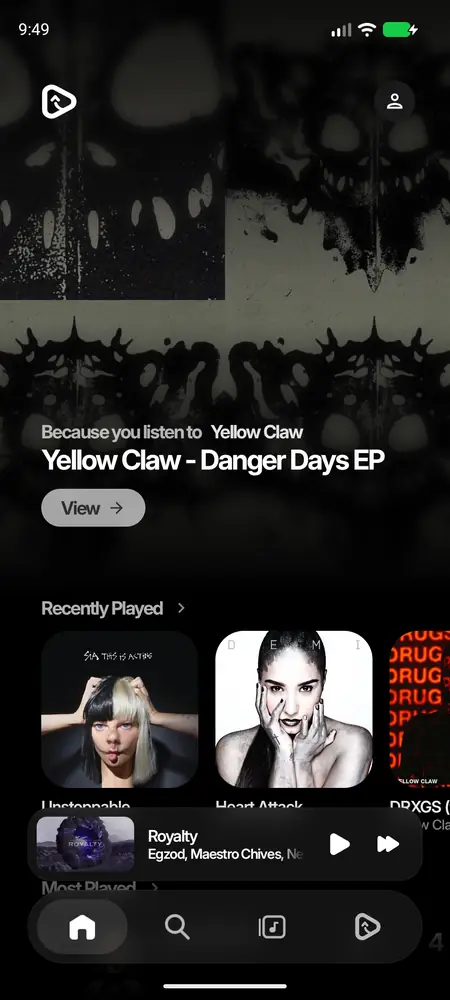
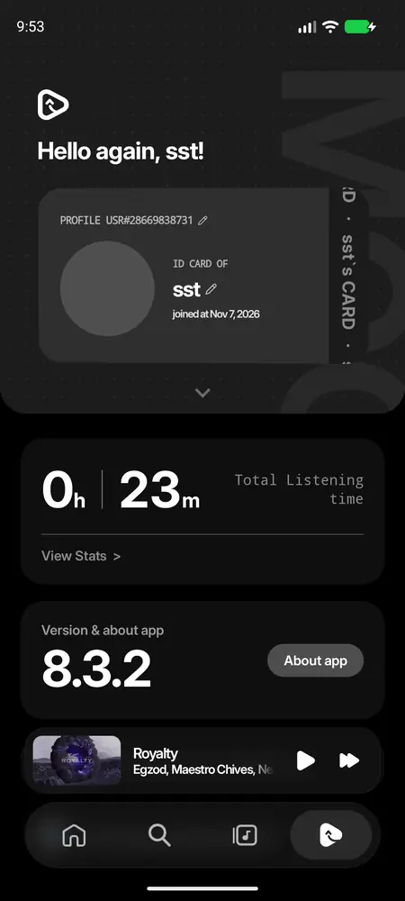
Home: picked for you
Homewhat to play
→
Searchfind anything
→
Libraryyours
→
Profilestats + settings
tapping a tab you're already on scrolls it back to the top. tapping it from a page deeper inside (an album, a playlist) takes you back to the tab's own page, like every tab bar does.
Installing
getting mochy on your phone
go to the releases page and download the apk. arm64 is for almost every phone, universal works everywhere but its bigger.
open it, android asks if you trust the source, say yes.
open mochy, it walks you thru a few steps: a username, importing (you can skip), and a check if your phone can do blur.
mochy works on android 8 and newer. system blur runs natively on android 12+, while module glass (including liquid glass) and module frosted panels also run on android 10–12 through a lightweight gpu fallback. standalone module shaders and static module image blurs work all the way down to android 7/8.
updates show up inside the app when theres a new one, you can turn that off in app behaviour.
Home
what to play, picked for you
1234
the hero. swipe it sideways. it rotates between songs on repeat, things picked from what you like, and the gacha card (roll it for a random song, its fun trust me).
shelves. recently played, most played, mixes. tap the title to see all of it.
the mini player. tap it to open the player, swipe it sideways to skip.
the bar. home, search, library, profile.
Search
moods and genres at first. type to search songs, albums, artists, playlists and videos. tap search twice fast and it goes straight to typing.
Home has three styles too (mochyy, listen now, hop in), change it in customisation.
Player
and all the ways it can look
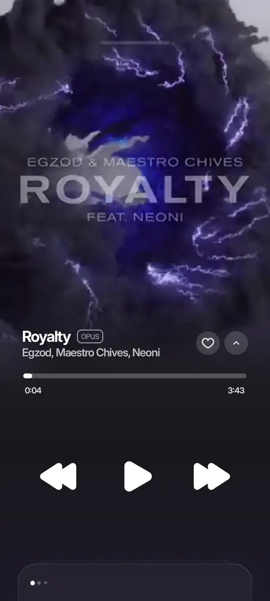
1234
the cover. swipe it to change song. some songs have an animated canvas or their music video here.
the title. the little badge beside it says the format (opus, aac, flac).
seek bar. drag it anywhere.
controls. swipe the player down anywhere to close it.
Changing the style
hold the player and it shrinks into a picker of styles. swipe between them and tap one.
Flagship
Classic
Turntable
iPod
Poster
Timeline
Lyrics
Bedside
Video
a look module can bring a style of its own too, it shows first in that list. (see player style)
Lyrics
word by word
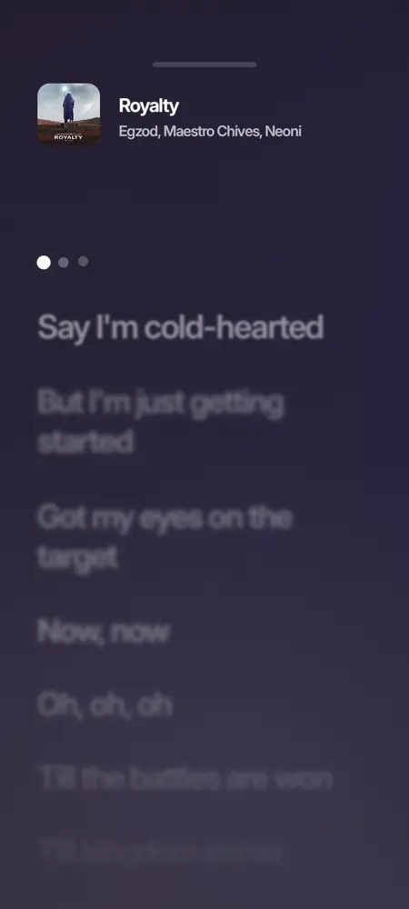
tap the card at the bottom of the player to open the lyrics. the line being sung is bright, the rest fade.
mochy asks a bunch of lyric sources at once and keeps the best one (timed lyrics win). you can switch source from the player's menu, nudge the timing, or translate them.
with a music video playing, lyrics follow the video instead of the album version.
lyrics modules join the list too, and go first while their on.
Library
your music, from everywhere
12
filters. all, local (files on your phone), cached and imported.
import. bring playlists and likes from spotify, youtube music, apple music and tidal. it matches every song so it plays here.
downloads live here too. they come from the best source in your download order (audio quality page), as one file the phone can play.
Audio lab
make it sound like you want
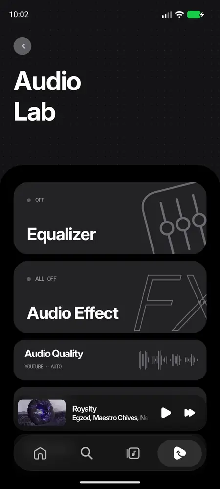
settings → audio lab. the equalizer, audio effects (reverb and friends), crossfade, and audio quality.
audio quality has the provider order: each song plays from the first provider thats on and has it. youtube music is one of them, modules that play songs are the others.
Monochromelossless
→
your module
→
YouTube Music
Stats
replay it. look at the past.
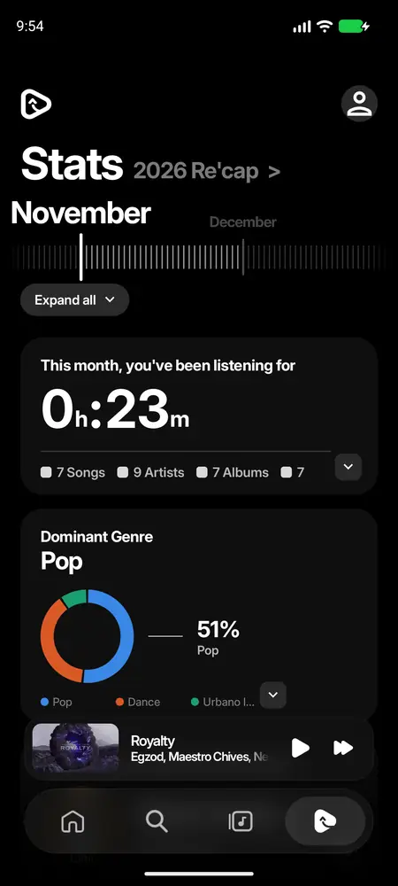
profile → view stats. how long you listened, your top songs, artists and genres, per month or year.
the recap is the story version, like a wrapped, whenever you want.
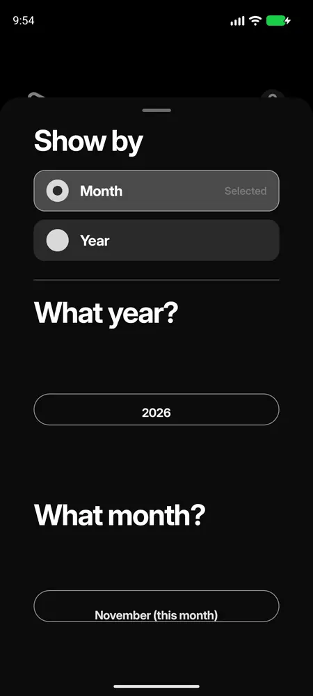
pick the month or the year and play through it.
all of this stays on your phone, mochy never sends it anywhere.
Settings
everything, sorted
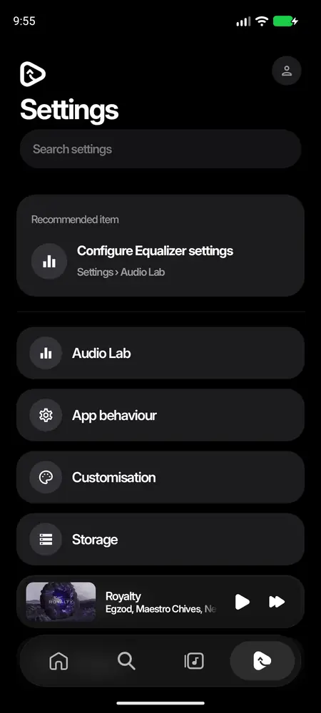
12
search. type any setting, it takes you right to it.
categories. audio lab, playback, now playing (lyrics, videos, canvas), app behaviour, customisation, storage, integrations, devices, modules. pages that modules bring show up under modules.
Data saver
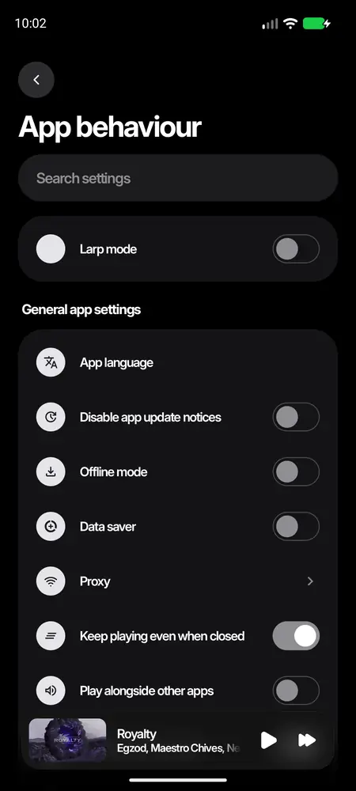
app behaviour → data saver. try it:
Data saver
Only on mobile data
Modules
what they are, and every kind you can make
ok so this is my favourite part of mochy. a module adds something to the app without you waiting for me to ship an update. most of the time it's just a folder with a manifest.json in it (a small text file that says what you want), zipped up. mochy reads it and builds everything with its own parts, so your thing looks and feels like it was always in the app.
there are a few kinds, and one module can be any mix of them. tap one to jump to its page, each has a full example you can copy:
every module can also have an icon and a banner, settings people change on its page, and an update button that shows up by itself when you publish a new version.
Where you see them
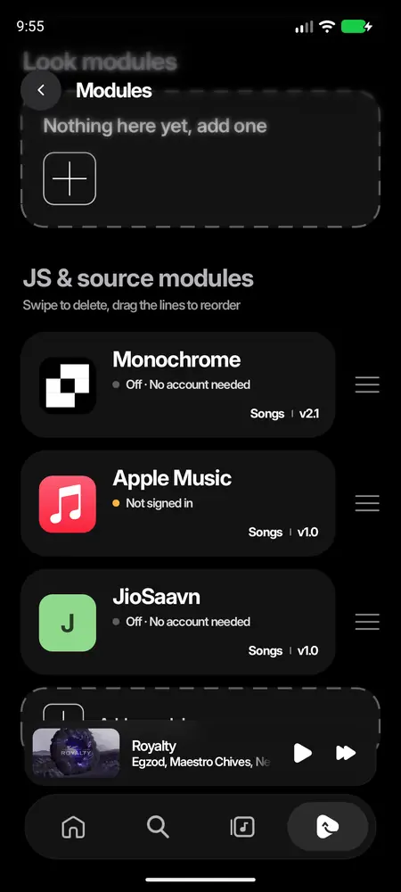
123
look modules are the ones that only change how mochy looks: looks, players, bars, pages.
JS & source modules bring songs, lyrics or song info.
drag a row by its lines to reorder, swipe it left to delete. the order is the order songs, lyrics and song info are asked in. tap a row to open the module's own page.
each row shows the icon, the name, a dot for how it's doing (green is on, grey is off, amber means it needs something), what it adds and its version. when a newer version is out, a white update pill shows up on the row too.
nothing from a look, a player, a page, a web module or a plain zip runs inside mochy as code. they only hand back json, stream links and look values, and mochy draws everything with its own parts. that's why anyone can make one and nobody has to trust it with the app.
the only exceptions: code modules (only loaded when they're signed with mochy's own key, so only i can make them), JS Modules scripts (sandboxed inside that module, no access to your phone or the app, only the internet through mochy), and shaders, which run on the gpu and can only paint pixels.
How modules work
what mochy does with yours, from adding it to removing it
before you build anything, here's the whole life of a module, so nothing surprises you later.
1. add ita link, a zip or github
→
2. mochy checks itshows what it adds
→
3. it sits there, off
→
4. you flip enable
→
5. it's live
→
6. updatewhen you publish
→
7. removegives everything back
1 and 2: adding and checking
whatever way it comes in, mochy reads the manifest.json first and shows a little sheet: the name, what it adds (songs, lyrics, song info, a look) and where it came from. nothing is installed until you tap add. a zip's pictures, fonts and shaders are unpacked into mochy's own files right then, so a look works offline after that.
3 and 4: the one switch
every new module starts off, so adding one never changes anything until you turn it on yourself. each module has exactly one switch. off means gone everywhere: from audio quality, the provider order, the download order, the lyrics sources, about song, settings, the player's menu and the look.
5: what "live" means for each kind
it adds
while it's on, mochy…
a look
writes its values onto your settings and remembers what they were before. turn it off and your own come back, exactly how you had them. change something by hand while it's on and your change wins, even after it goes off.
a player (or players)
adds every player and sub-style to the style picker and switches to the first one. off, your own style comes back.
a bar or glass
draws the nav bar, the wide bar and the mini player with your shader or tabs (native agsl on android 13+, gpu fallback on android 10–12, optional static fallback on android 7–9 — see android versions).
floating, sheets, menu, app background
applies your floating lyrics bubble skin, restyles native bottom sheets and bubble menus, opens your custom sheets over the player, and paints your app background behind non-sensitive screens.
pages & takeovers
lists your pages on the module's page, adds inSettings pages under settings, adds your actions to the player's menu, and opens any replaces page in place of mochy's own.
audio effects
lists each liveprog script (or signed native processor) under audio fx → mixer → add effect so people can drop it onto any bus with knobs and presets.
songs
asks it for every song in the provider order (audio lab → audio quality). the first one that has the song plays it. a module that doesn't answer in 12 seconds is skipped for that song.
lyrics
adds it to the lyrics sources, first in line when you turn it on. it's graded like every other source, so word synced beats line synced beats plain.
song info
asks it when about song opens (and for module players using {about} / {genres}), along with mochy's own sources. each fact comes from the first module on your list that knows it.
Stacking several looks
you can have as many look modules on at once as you want — for example, one module for liquid glass, another for a custom font, and a third for a player style. the order in the looks section on the modules page decides who wins whenever two looks touch the same thing:
turning a look on raises it to the top of the looks list so what it brings shows up straight away.
the higher look wins for each individual look setting, the app font, the glass shader, the custom nav bar, the mini player, the floating lyrics skin, the sheet style, the default bubble menu style and the app background.
players never cover each other: every active look's players and sub-styles stay side by side in the style picker, so you can mix a player from one module with a bar from another.
if a look sits underneath another one that brings the same part (like two glass modules), its page tells you so and gives you a one-tap button to move it back on top.
custom sheets and takeover pages work from any active module, even one that isn't a look.
The order
the order on the modules page is the order mochy asks modules in. drag a song module above youtube and it's asked first. lyrics and song info modules follow the same order.
6: updates
a module added from github or from a link remembers where it came from. a few times a day, when you open the modules page, mochy quietly asks there if anything new is out. if there is, an update button appears. tap it and the new version goes in place, switch and settings untouched. the whole story is on adding & updating.
7: removing
swipe the row left, or tap remove this module on its page. its look gives your settings back, and its pictures, fonts, shaders, settings and anything you added to it are deleted with it.
A module's page
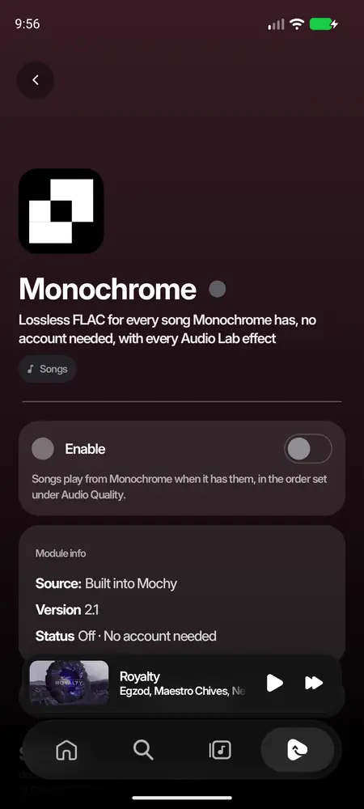
top to bottom: the banner (the page takes its colour from it), the icon and name, enable, module info (added date, where from, version, author, status, and why a shader didn't load if one didn't), updates (for github and link modules), account buttons, the data saver card, options (your settings), servers or items, pages, test the module, and remove.
Your first module
two minutes, i promise
the easiest module is a look in a zip: one json file and an icon. this one turns mochy pure black with sharp corners and the turntable player.
1. a foldermidnight/
→
2. manifest.json+ icon.png
→
3. zip it
→
4. add from a file
→
5. turn it on
midnight/
├── manifest.json // what the module is and what it changes
└── icon.png // a square picture, 512×512 is plenty
make a folder called midnight. put that manifest.json in it, plus a square icon.png.
zip it. mac: right click the folder → compress. windows: right click → send to → compressed (zipped) folder. terminal:cd midnight && zip midnight.zip manifest.json icon.png
send the zip to your phone. in mochy: settings → modules → add a module → add from a file → choose a .zip.
mochy shows what it adds. tap add, open its page and flip enable.
thats a whole module! turn it off and your own settings come back. from here every page in this wiki just adds one more thing to that same manifest. want to see where it ends up? neon night is a full player and liquid glass is a full bar with a page.
tip: while you're making it, keep the zip on your phone and add it again after every change. adding a zip with the same id updates the module in place, its switch and settings stay.
File structure
what goes where, for every kind of module
here's every layout mochy understands. the rules first, then a tree for each kind.
The rules for a zip
manifest.json sits at the root of the zip, or inside one folder (that's how most zip tools pack a folder, so both work). mochy only looks through the first 200 entries for it, and it has to be under 256 KB.
paths in the manifest are relative to the manifest, use /, and are case sensitive: Images/Icon.PNG is not images/icon.png.
mochy unpacks pictures (.png .jpg .jpeg .webp .gif), fonts (.ttf .otf), shaders (.agsl .sksl), mixer audio scripts (.eel), and live surface data assets (.wad .pk3 .wl6 .wl1 .pak .rom .gb .gbc .gba .nes .sfc .smc .ch8 .dat .bin). up to 200 files, 24 MB per file, 48 MB in all (images over 8 MB are still heavier than you need). everything else is ignored, and so are macos's hidden __MACOSX and ._ files.
a path can't climb out of the module (../ is dropped).
folder names are up to you. i use images/, fonts/ and shaders/ so it's easy to read.
my-module.zip my-module.zip
└── manifest.json └── my-module/
└── manifest.json
// both of these work
a look made only of settings also works as a link to its manifest, like https://raw.githubusercontent.com/you/midnight/main/manifest.json. pictures then sit next to the manifest.
A player
neon-night.zip
├── manifest.json // "player": { "keyframes", "styles", "blocks", ... }
├── images/
│ ├── icon.png
│ ├── banner.webp
│ ├── grain.png // a background layer
│ └── rim.png // a frame drawn over the spinning cover
├── icons/
│ ├── heart.png // your own button icons, white on transparent works best
│ └── heart-on.png
├── fonts/
│ ├── Sora-Regular.ttf
│ └── Sora-Bold.ttf
└── shaders/
├── aurora.agsl // a background shader
└── meter.agsl // a shader block
a player can come from a link too, but fonts and shaders need the zip (a font has to be a file on the phone, and shaders are code for the gpu).
you can combine audio with a look, player or pages in the same zip.
A song, lyrics or song info source
these live on a server, because the answer depends on the song. the server is the module:
https://my-flac.example/
├── manifest.json // GET: what it is and what it answers
├── search?q=… // GET: songs that match
├── stream/{id} // GET: the stream of one of them
├── lyrics?title=… // GET: lyrics, if it's a lyrics provider
├── metadata?title=… // GET: song info, if it's a song info provider
└── icon.png // optional, next to the manifest
people add it by pasting https://my-flac.example. want to hand it out as one file instead? put a url in the manifest and zip it:
my-flac.zip
├── manifest.json // "url": "https://my-flac.example", "resources": [...]
└── icon.png // the zip's pictures win over the server's
this zip isn't a module on its own, it's added on JS Modules' page. see scripts.
On GitHub
your repo holds the source, the release holds the zip people install:
github.com/you/neon-night
├── module/ // what goes in the zip
│ ├── manifest.json
│ ├── images/ …
│ └── shaders/ …
├── build.sh // zips module/ (optional, see below)
└── README.md
releases/
└── v1.2
└── neon-night.mochyymodule.zip // the file mochy installs, "mochyymodule" in its name
#!/bin/sh
# a tiny build.sh: checks the manifest is valid json, then zips module/
set -e
python3 -c "import json; json.load(open('module/manifest.json'))"
mkdir -p build
cd module && zip -q -X -r ../build/neon-night.mochyymodule.zip . -x ".*" && cd ..
echo "built build/neon-night.mochyymodule.zip"
manifest.json
field by field
every module, link or zip, describes itself with one manifest.json. here's every top level field:
field
needed?
what it's for
id
id or name
short and stable, like neon-night. mochy turns it into web.neon-night (link) or local.neon-night (zip), so it can never replace a built-in module. never change it: adding the same id again is how a module updates
name
id or name
what people see
version
no
shown on its row and page, and on the update button. bump it every time
what a server answers: search + stream plays songs, lyrics makes it a lyrics provider, metadata a song info provider. plain names or { "name": "search" }
fields mochy doesn't know are ignored, so a manifest written for a newer mochy still opens on an older one. the same goes for blocks and animations inside a player: an older mochy skips what it doesn't know.
Two rules worth knowing
a manifest with no resources, no audio, and nothing that changes the look (look, player, players, bar, mini, font, pages, actions, glass, floating, background/appBackground, sheet, menu, or settings carrying a look/glass) is read as a song source, because that's what most services like this are.
a website's own manifest.json is turned away. websites have one for "install to home screen", with start_url, display, short_name or icons. a manifest with any of those and none of the module fields gets "that's a website, not a module". so don't use those names.
Numbers and text
mochy is forgiving: "12" and 12 both work, so do "true" and true. every number is kept in range, so a typo can never break anything: a size of 500 just becomes the biggest one allowed. colours are "#RRGGBB" or "#AARRGGBB" (the first two digits are how see-through it is).
Icon & banner
make it look like yours
1234
banner. wide, about 2:1 (1200×600 is plenty). it fades into the page, and the page takes its colour from it. keep the bottom third calm, the icon and name sit over it.
icon. square, 512×512 is plenty. shown on the row, big on the page and next to its pages in settings. mochy rounds the corners, so give it square ones.
name + dot. green is on, grey is off, amber means it needs something.
no banner? mochy blows your icon up and softly blurs it instead. no icon either? your first letter on a colour.
Where a picture can come from
this is the same everywhere in a module: icons, banners, player pictures, button icons, page pictures, menu row icons.
you write
it means
"images/banner.webp" in a zip
a file in your zip, next to manifest.json
"https://example.com/banner.webp"
a link
"icon.png" in a link module
a file next to its manifest: with https://you.github.io/glass/manifest.json it's https://you.github.io/glass/icon.png
.png, .jpg, .webp and .gif work, up to 8 MB each. webp is the smallest. a phone screen is about 1080 pixels wide, so a 1080×2400 background is already plenty.
Settings
options people change on your module's page
settings lists your module's own options. they show under options on its page, like this (go on, press them):
Region
Allow explicit songs
"settings": [
{ "key": "region", "label": "Region", "type": "select", "default": "us",
"options": [
{ "value": "us", "label": "United States" },
{ "value": "jp", "label": "Japan", "description": "Songs from the Japanese catalog" }
] },
{ "key": "token", "label": "Your API key", "type": "text", "hint": "Paste it here",
"description": "Find it in your account page" },
{ "key": "explicit", "label": "Allow explicit songs", "type": "toggle", "default": "true" }
]
field
what it's for
key
the setting's name, the same forever. it's also the query parameter a server gets, and the name a player uses in when, states, $colours and {$key} text
label
what people see. without it the key is shown
type
select (round rows to pick one), text (a line to type in, saved when you stop typing), toggle (a switch) or slider (a number between min and max, see sliders). left out, mochy works it out: options make a select, a "true"/"false" default a toggle, anything else text
default
what it starts as. a select starts on its first option without one, a toggle starts off
options
for a select: plain values (["us", "jp"]) or objects with value, label, description, look and glass
hint
for text: the grey words in the empty field
description
a line under the setting. a picked option's own description shows under the list
look, glass
for a toggle: the look or glass change it puts on while it's on
min, max, step
for a slider: its ends (0 and 1) and one notch (smooth without it). it starts on min without a default
Where the values go
you pickon the page, in a page, or in the player's customise sheet
→
mochy keeps it
→
it goes where it's needed
a server gets every setting as a query parameter on every call (/search, /stream, /lyrics, /metadata): ?region=jp&token=abc&explicit=true. a value nobody set goes as its default.
a module that plays songs keeps quality and atmos for mochy's own stream and dolby atmos choices, so those two never show as options.
a player reads them live: blocks show or hide with when, states switch, colours and text follow. see states & events.
a page can show any of them with a setting block.
a zip with its own code gets them through ModuleFields.onFields (for devs).
Settings that change the look or the glass
an option, or a toggle that's on, can carry a look of its own. it's laid over the module's look while the module is on. when someone picks something else, mochy gives the old values back and puts the new ones on. a glass works the same way: a blur, a margin and uniforms laid over your bar's glass. that's how one module offers "liquid" or "clear" glass, or hands the bars back to mochy's frost:
a module whose settings carry a look or a glass counts as a look, even with no look of its own.
Adding & updating
four ways in, and the update button
everything starts at settings → modules → add a module. whichever way you pick, mochy checks the module first and shows you what it adds before anything is installed.
From a linkpaste a server's link (https://my-flac.example) or the link to any manifest.json. both work.
From GitHubpaste a github project's link. mochy grabs the module zip from its newest release. how to set that up
From a filepick a module's .zip that someone sent you on discord, telegram or as a download.
From the catalogthe list under the link box, read straight from github so it grows without an app update.
The update button
a module that came from github or from a link remembers where it came from, and mochy checks there for you:
you open settings → modules
→
mochy asks the sourceat most every 6 hours per module
→
something new?
→
an update pill on its rowand an update card on its page
→
one tap
it came from
"something new" means
the button says
a github project
a newer release, or the same release with its mochyymodule zip uploaded again (so a quick fix without a new tag still reaches people)
the release's tag, like update to v1.3
a link
the manifest.json changed at all, even if you forgot to bump the version
the new version, or update now when the version didn't change
a file from the phone
mochy can't know, there's nowhere to ask
no button. add the new zip again to update it
on the module's page, the updates card says where it updates from and when it last checked, with a check for updates button that asks right now. updating keeps the module's switch, its settings, its order and anything you added to it. if the module is a look that's on, the new look goes on straight away and your own settings are still given back properly when it goes off.
why only every few hours? github lets an app ask 60 times an hour without an account, shared by everyone on the same wifi. checking each module a few times a day keeps everyone well under that.
Updating by hand
adding a module with the same id again always updates it instead of adding a second copy. paste the same link, or pick the new zip.
Removing
swipe the row left on the modules page, or tap remove this module on its page. its look gives your settings back, and its pictures, fonts, shaders and settings are deleted with it.
Backups
modules you added are kept in mochy's backup like everything else, zips and code modules included.
Publishing on GitHub
a link people paste once, and updates that find them
if your module lives on github, people don't need to download anything themselves. they paste your project's link, mochy finds the module in your newest release and installs it. and every release you publish after that shows up as an update button on their phone.
github.com/you/vinyl
→
newest releasenot drafts or pre-releases
→
the zip named *mochyymodule*
→
checked like any zip
→
add
Naming the zip
attach your module's zip to a release and put mochyymodule in its file name. that's the only thing mochy looks for, so other files in the release (source code, screenshots, apks) are left alone.
file name
picked?
vinyl-night.mochyymodule.zip
yes ✓
liquid-glass-1.2.mochyymodule.zip
yes ✓
vinyl-night.zip
no, it doesn't say mochyymodule
vinyl.mochyymodule.tar.gz
no, it has to be a .zip
the zip itself is exactly the same as one you'd send as a file. see file structure.
The links that work
someone pastes
mochy takes
github.com/you/vinyl
the newest release
github.com/you/vinyl/releases
the newest release
github.com/you/vinyl/releases/tag/v1.2
exactly that release (updates still follow your newest one after)
github.com/you/vinyl/blob/main/manifest.json
not a release: treated as a normal link
Debug and release builds
a module with its own code has to be signed like the mochy it runs in. if your release has two zips with mochyymodule in the name, mochy takes the one with debug in its name on debug, fast and profileable builds, and the other one on a release build. so js-modules-debug.mochyymodule.zip next to js-modules.mochyymodule.zip just works, for installs and updates alike.
Shipping an update
bump version in your manifest. keep the id the same, always.
make the zip, publish a new release and attach it.
that's it. within a few hours everyone who has it sees update to v1.3 on its row. people who want it now can tap check for updates on its page.
limits: the zip can be up to 40 MB. a project with no release, or a release with no zip named mochyymodule, gets a friendly message saying so.
# with the github cli, from your module's folder
zip -r vinyl-night.mochyymodule.zip manifest.json images fonts shaders
gh release create v1.2 vinyl-night.mochyymodule.zip --title "Vinyl Night 1.2"
# fixed something small? upload over the same release, people still get the button
gh release upload v1.2 vinyl-night.mochyymodule.zip --clobber
Looks
restyle mochy, safely
a look is a list of mochy's own settings with the values you want. while your module is on they're put in place, and when it goes off people get theirs back. it's the simplest module there is.
stack several at onceyou can turn on as many look modules as you like. turning one on raises it to the top of the looks list; where two touch the same setting or part (like the glass, font or nav bar), the higher one wins.
you always winchange a setting by hand while a look is on, and you keep your value even after the look goes off.
survives restartsmochy keeps per-setting holds remembering your own values from before, so turning looks on and off after restarts always restores cleanly.
nothing runsa look is a description. mochy draws it with its own parts, so it stays smooth on slow phones and can't break anything.
Look settings
a look may change only these, so a module can restyle mochy but never reach your accounts, the network or playback. values are written as text ("true", "12", "FLAGSHIP"). keys are spelled exactly like this, style names can be any case, and a value out of range is simply ignored.
key
values
what it changes
bottomBar
FROSTED, MODULE
the glass of the nav bar, the wide bar and the mini player. MODULE is your own glass and is picked for you when you bring one
for a long time custom shaders and liquid glass only ran on android 13 and up. now mochy automatically converts module agsl shaders into opengl es 3.0 and runs a lightweight gpu dual-kawase blur on older phones — so the same zip you write works across almost every android version, with zero extra overhead on android 13+.
What runs where
feature
android 13+
android 12
android 10–11
android 7–9
Module bar glass (glass, Liquid Glass)
native agsl
gles 3.0 + kawase
gles 3.0 + kawase
glass.fallback or mochy's frost
Frosted boxes, page cards & blur bands
native blur
native blur
quarter-res kawase
clean tint fallback
Player, nav bar & page shaders
native agsl
gles 3.0
gles 3.0
gles 3.0
Background image & cover blur
native blur
native blur
cached box blur
cached box blur
Per-block blur & floating lyrics blur
native blur
native blur
sharp (skipped)
sharp (skipped)
Custom lyrics fill / effect shaders
native agsl
plain custom lyrics
plain custom lyrics
plain custom lyrics
How the gpu fallback stays fast
your .agsl file
→
sandbox check
→
agsl → glsl es 3.00
→
dual-kawase blurfor glass only
→
zero-copy HardwareBuffer
zero work on android 13+: the fallback gl thread is never even started on phones that already have native RuntimeShader.
zero work while idle: on android 10–12, backdrop capture and shading only run when what's behind the bar actually changes, or while the nav pill moves (and pill-only movement reuses the already-blurred backdrop without re-blurring it).
lightweight scaling: chrome glass shades at 0.75× on high quality (0.5× on low), and frosted boxes blur at quarter resolution (0.35× / 0.25×) with hardware bilinear upscaling so even older midrange gpus stay smooth.
cached static blurs: blurred picture backgrounds, coverBlur, subjectCover, playingCover and blurred module banners run a fast 3-pass box blur off the main thread once and cache the result in coil.
Writing shaders that work on every android
mochy's transpiler translates standard agsl automatically: float2..4 → vec2..4, half..half4 → float..vec4, float2x2..4x4 → mat2..4, layout(color), saturate(), unpremul(), sk_FragCoord, and content.eval(p). to make sure your shader compiles cleanly on both skia (13+) and gles 3.0 (7–12):
always write your entry point as half4 main(float2 p) (or float4 main(float2 p)).
keep standalone shaders (player backgrounds, player blocks, nav bar shaders, page shaders) free of uniform shader inputs — only bar glass shaders receive uniform shader content;.
stay within the sandbox guard: no while/do loops, at most 6 bounded for loops (≤ 128 iterations), at most 32 .eval() calls, no #include/#pragma/#extension/#version, and under 64 KB.
if a shader fails to compile on either engine, mochy shows your fallback and prints the exact compiler line under module info on your module's page.
Styling android 7–9 with glass.fallback
phones below android 10 don't have hardware backdrop capture, so add a lightweight fallback right inside glass if you want those phones to still match your palette instead of dropping back to mochy's default frost:
fallback can also be a single colour string ("#CC12141A") or "frosted" (keep mochy's frost). sheen runs 0–0.4 (default 0.08).
Your own player
design the now playing screen
a player in your manifest describes a whole now playing screen. while your look is on, it's the first style in the style picker (hold the player to open it) under the name you give it. mochy switches to it when your look turns on, and back to the person's own style when it goes off.
i made this part really deep on purpose. you can keep it simple (a cover, a title and controls) or go wild: frosted panels, your own svg icons, blurred layers, keyframe animations driven by the bass, states that switch the whole layout when you pause, a shader background. the next pages go through all of it, one thing at a time.
What you get for free
your player gets everything the other styles have, without writing anything: swipe sideways to change song (your cover and words ride along), tap to play or pause, swipe down to close, the chevron menu (lyrics, shuffle, repeat, other menu, edit player, plus your own items), turning sideways, and its clocks resting while it's hidden.
How it's put together
a player is a background at the back and a list of blocks on top, laid out top to bottom in order. that's really it. everything else is more kinds of blocks and more ways to dress and move them.
up to 8 blocks in a row level with the chevron, at the very top, taking no room from the rest
scroll
true lets the blocks scroll when they're taller than the screen. swiping down at the top still closes the player. grow spaces don't grow while it scrolls, they're just their size
false
handle
false takes away the white bar at the top of the player (and over your pages). swiping down still closes it, and a close button still works
true
lyricsPage, queuePage
your own lyrics page and queue page, opened instead of mochy's by the lyrics and queue buttons, the bottom bar and the chevron menu (sheets & pages)
mochy's
Laying things out
space with "grow": true pushes things apart. two growing spaces around everything centre it on the screen.
row puts its blocks side by side. words, bars, visualizers, columns and boxes share the width; covers, pictures, shapes and buttons keep their own size.
column stacks its blocks, handy inside a row.
stack lays its blocks on top of each other, the first at the back. that's how you put a ring visualizer around a cover, or a sticker over it.
box is a column (or a row) on a panel: frosted glass, a colour or a gradient, round corners, a border. see panels, shapes & blur.
groups can go four deep. a block mochy doesn't know is skipped, so a newer layout still opens on an older mochy.
it stays smooth because nothing you write runs as code on the main thread. mochy draws every block with its own parts, everything that moves is worked out while drawing (so it never rebuilds the screen), and every loop, visualizer and shader stops the moment the player is closed. i test every feature here on a redmi note 11 pro, which has a pretty weak gpu.
Blocks
every piece you can put on the screen
each block is an object with a type. every number is kept in range, so a typo can't break the player. defaults are in brackets.
The song
type
what it shows
fields
cover
the song's cover, riding the swipe between songs. it can play the song's video or animated cover too
shape: rounded, circle, square (rounded) · corner 0–80 (18) · size share of the width 0.1–1 (0.8) · width 16–600 and height 16–800 in dp, instead of size · aspect width over height, "16:9" or a number 0.25–4 (1) · fit: crop or fit (crop) · media what moves over it, see covers that move · spin turns like a record while playing (false) · spinSpeed 0.1–4 (1) · frame a picture over it that stays still while it spins · shadow (false)
the synced lyrics, sung through word by word. "style": "flow" is a few small lines rolling up instead, the sung one lit
height 60–600 (160) · size 14–60 (28) · color (ink). with flow: height 16–600 (72) · size 8–60 (14) · active the sung line's colour · prefix up to 8 characters before the sung line, like "> " · align. "style": "custom" is your own, see lyrics your way. "style": "mochy" is mochy's own lyrics page, flowing the way it does there: height 40–1200 (the room left) · header mochy's cover and title over them (false)
style: line, thick, pill (line) · color (ink) · track (chip) · times show the times (true) · seek (true)
controls
previous, play/pause and next together
size 28–96 (48) · style: circles or plain · color the circles' fill · icon the icons' colour
bottomBar
the bar under the controls that opens the lyrics and the queue: two cards (the sung line, and what's next with its cover), two pills, or mochy's own volume bar with its lyrics and queue buttons
style: cards, pills, volume (cards) · height 36–160 (76, pills 48) · corner 0–80 (22) · glass true, blur dp 0–60, or a rich glass object · fill or colors · color its words and icons (ink) · gap 0–40 (10). the volume style keeps mochy's own look
queue
the upcoming songs right inside your player, each row tapping to play that song or open the full queue
limit 1–20 (4) · covers (true) · coverSize 24–72 (40) · corner 0–36 (10) · gap 0–32 (10) · text fields (14, semibold, ink) · artistColor (inkSoft) · times show each length (false) · numbers (false) · tap: play, queue, none (play) · height 60–600 to scroll inside a fixed box · empty words when nothing is next. "style": "mochy" is mochy's whole queue instead, drag to reorder, swipe away and its menus included: height 40–1200 (the room left) · header (false)
volume
the phone's music volume as a draggable bar, following the volume keys too
style: line, thick, pill (line) · color (ink) · track (chip) · icons quiet and loud speakers (true)
button
one control, or any custom caller, in a circle
any caller (action, sheet, sheetPage, openSheet, route, toggle, set, toggleSetting, setSetting, link, page, search) · size 24–96 (44) · color icon colour · fill circle colour · image your own icon · imageOn your icon while it's on
Decoration
type
what it shows
fields
text
your own words, with the song, lyrics, queue, about info and your settings filled in
text (up to 200 characters) · text fields (14, medium, inkSoft). see player info
image
your picture, or a song's cover ("{cover}", "{nextCover}"…"{next10Cover}", "{prevCover}"). a gif or animated webp of yours plays as a loop (android 9+)
image · fallback picture when a song has no cover · height 8–600 (120) · width (full width) · corner 0–80 (12) · fit: crop or fit (crop) · tint recolours it, for one-colour icons
shape
a box, a circle, a pill or a line
shape: rect, circle, pill, line · width (full) · height 1–600 (2) · color, or colors for a gradient · corner 0–300 · stroke 0.5–40 to only outline it
its blocks in a box of their own that scrolls, while the rest of the player stays put
blocks · height 40–1200 (the room left) · direction: column or row (column) · gap 0–80 (12). in a row, give blocks a width and use plain spaces: there's no end for a growing one to push against
Fields every block takes
field
what it does
x, y
nudge it by this many dp, −400–400. it moves after layout, so it never pushes other blocks
rotate
turn it, −180–180 degrees
scale
grow or shrink it, 0–5 (1)
opacity
0–1 (1)
blur
blur the block itself, 0–60 dp. android 12+, older phones show it sharp
origin
the point it turns and grows around: "center", "top", "bottom left"… or originX/originY from 0 to 1
animate
a loop while the song plays, a preset or your keyframes. one, or a list of up to 4
enter
how it comes in when the player opens (presets or keyframes)
for title, artist, album, text and time: size 8–72 · weight: thin, light, normal, medium, semibold, bold, black · color · lines 1–4, longer text ends in "…" · upper true for CAPITALS · align: start, center, end · spacing extra room between letters in em, −0.1–1 · wrap true to hug the words in a row instead of sharing its width.
wrap is how you put a label and its value side by side in two colours, with a growing space pushing the next pair to the edge:
and these follow what's actually playing and where it goes. they're numbers or short words, so you write the units yourself ({kbps} kbps, {size}mb). one mochy doesn't know yet shows as –.
you write
it becomes
{codec}
MP3, AAC, OPUS, FLAC…
{khz}
the sample rate, 44.1 or 48
{kbps}
the bitrate, 160. a lossless file works it out from its size
{bits}
the bit depth, 16 or 24
{size}
the file size in mb, 7.4
{quality}
Lossy or Lossless (add "upper": true for capitals)
{device}
where it plays: Speaker, Headphones, or your bluetooth or usb device's name
{volume}
the phone's media volume, 0–100
{cpu}
how much of the phone's cpu mochy is using, 0–100
the volume and cpu are read once a second, only while the player is open. the rest only change with the song or the output.
the sung line, the time and what's next in the queue have placeholders too, on player info.
Colours
anywhere a colour goes you can write a fixed one, "#FFFFFF" or "#80FFFFFF" (with see-through), or one that follows the song:
name
what it is
ink
the style's main text colour
inkSoft
softer text
played, remaining
the song's two tones, from its cover
chip
the faint fill behind buttons
cover
the cover's main colour
accent
the app's accent colour
"$glow"
whatever the person typed or picked in your setting called glow. "$glow|#FFFFFF" says what to use until it's a real colour
Panels, shapes & blur
frosted cards, your own vector icons, blurred layers
this page is where your player stops looking like a list and starts looking designed. three tools: box for panels, path for any vector shape, and blur on anything.
box: a panel
a box holds blocks like a column (or a row) and draws something behind them: frosted glass, a colour or a gradient, with round corners and a border.
what's on the panel. can be empty, then it's just a shape with a height
direction
column or row
column
gap
space between its blocks, 0–80
8
padding
space inside its edge, 0–80
16
corner
0–300
22
glass
frosted glass: true (24 dp), a blur in dp 0–60, or a full object { "blur": 28, "progressive": "bottomToTop", "ramp": 0.8, "tint": "#26000000", "bleed": true, "outline": true, "shader": "shaders/frost.agsl", "uniforms": { … } }. progressive can be topToBottom, bottomToTop or radial; ramp is 0.1–1
none
fill
one colour. over glass it's the glass's tint, so keep it see-through
none
colors
2 to 6 colours for a gradient
gradient
vertical, horizontal, diagonal, radial
vertical
stroke, strokeColor
a border, 0.5–20 dp, in any colour
white at 18%
width, height
8–600 and 8–800. without a width it fills the row or the screen
how the glass works: mochy captures your player's background (everything under background, layers and shader included) and blurs the part behind each glass box, past its edges so nothing bright smears in. it doesn't blur other blocks, and with the tones background there's nothing to blur, so the box shows its tint. in the small preview in the style picker it's a soft panel. blur runs natively on android 12+, via a lightweight quarter-res gpu fallback on android 10–11, and falls back to the tint on android 7–9 (android versions).
blur: standalone progressive & frosted blur bands
use a blur block inside a stack or layout to paint a uniform, progressive or radial backdrop blur strip anywhere without wrapping children in a box:
svg path data: M L H V C S Q T A Z and numbers, up to 8000 characters
viewBox
the box the path was drawn in, "0 0 24 24" or just "24 24"
24 × 24
size or height
4–600
48
width
4–600. without it the shape keeps its view box's proportions
fill
a colour, or "none"
ink, or none when there's a stroke
colors
a gradient fill, top to bottom
stroke, strokeColor
an outline, 0.5–40 dp (it stays that thick however you scale the shape)
ink
a path is a block like any other, so it can spin, pulse with the bass, switch states, sit in a stack over the cover or in a row next to a button.
blur on anything
every block takes blur (0–60 dp), and so does every keyframe and state. a blurred block fades out at its edges instead of smearing. it's how you do a soft glow behind a cover, or have the title blur away while paused:
the song's video or animated cover across the whole screen (covers that move)
media (auto) · fallback: what's under it until it starts and for songs with nothing moving (blurredCover)
shader
your own gpu code, zip only (native agsl on android 13+, gpu fallback on android 7–12)
shader · uniforms · fallback: another background if the shader can't run or doesn't compile (shader code)
Stacking backgrounds
give background a list instead of one object and they're drawn on top of each other, the first at the back. up to 4. every layer after the first takes opacity (0–1) and animate (a preset loop, like a slow drift or zoom).
dim goes over all of them, so the blocks stay readable however busy the layers get. a layer that drifts or zooms is drawn a little bigger than the screen, so its edge never shows. a blurred picture is blurred once and kept, so it costs nothing while the song plays. and everything here is what a glass box blurs behind it.
Covers that move
the song's video, its animated cover, your own loops, any size
a cover block shows the still picture by default. give it media and it can play something over that picture instead: the song's youtube video, its animated cover (the looping art apple music, tidal and spotify have for some songs), or a loop you bring yourself. the picture stays underneath, so it shows while the video loads and for songs that have nothing moving.
media is one word or a list. mochy goes down the list and plays the first one the song has. while one higher up is still being looked for, nothing plays yet, so a lower one never flashes in first.
value
what plays
"video"
the song's youtube music video, kept in time with the song (it pauses and seeks with it). a song that is a video plays its own. a video picked in "select video" wins, and "no video" turns it off for that song
"animated"
the song's animated cover, from the sources and order picked in mochy's settings. it loops while the player is open
"auto"
whatever the person turned on for mochy's own player: the video when video covers are on (or the song is a video), then the animated cover
"loops/idle.mp4"
a loop of your own, from your zip or a link, the same for every song. .mp4, .webm and .m3u8 play as video; .gif and animated .webp as moving pictures (android 9+, older phones show the first frame). put it last as a fallback, or alone to always play it
a turning cover turns its video with it, and the video slides with its song when you swipe, just like the picture.
Any size
covers don't have to be square anymore. size is still the share of the width, and aspect sets the shape: "16:9" for a wide video, "9:16" or "3:4" for a tall one, or a plain number (width over height). or give it width and height in dp. with only one of them, the other comes from aspect.
"fit": "fit" shows all of the picture or video instead of cropping it to the cover's shape. a fitted video sits on black, so the picture doesn't peek round its edges. a circle that isn't square turns into a pill.
A moving background
the liveCover background plays the same things across the whole screen, behind every block. put dim on the player so your words stay readable over it.
it's cropped to fill the screen and isn't blurred. frosted boxes still blur it, like they blur any background.
What the person decides
data saver stops the video, the animated covers and loops from links. loops in your zip still play, they don't cost data.
"enable animated canvas" off skips "animated", and with "canvas on wi-fi only" it waits for wi-fi.
"video" plays even when "always enable youtube background" is off, because your player asked for it. "auto" follows that setting.
nothing is looked up or played in the style picker's preview, or while the player is closed.
play the video in one place per screen. a cover and a liveCover background can't both show the same youtube video; the second one just keeps its picture. the soft glow trick from panels & blur works best with a still cover behind and the moving one on top.
Animation basics
ready-made loops, entrances and a visualizer
start here. these are one word each. when you want full control, the next two pages (keyframes and states & events) let you write your own.
Loops
any block, or any background layer, can loop while the song plays. write the name, or an object for more control:
pushes in and out very slowly, made for background layers
speed goes 0.1–4 (1 is normal), amount 0–3 (1 is normal, 0 switches it off). a list runs up to 4 loops at once, presets and keyframes mixed. loops only move while the song plays and the player is open. paused or closed, they hold still and cost nothing.
Entrances
an entrance plays when the player opens. with "on": "song" it plays again for every new song too.
delay 0–3000 ms (0), duration 100–3000 ms (450). give each block a slightly bigger delay and they come in one after another. an entrance can also be your own keyframes, see the next page.
Visualizer
a visualizer block follows the music as it's heard, after the equalizer and effects, lined up with what comes out of the speaker, not what was decoded half a second ago.
the visualizer and everything that follows the music share one clock that reads the music once a frame, however many of them you use. it only runs while something on your player needs it. when the audio goes straight to a receiver (some passthrough outputs), there's nothing for mochy to read and the bars stay low.
Keyframes
write your own animations, like css
if you've written css animations, you already know this. you name a set of keyframes once in player.keyframes, then any block uses it by name in animate, enter or on.
css style: an object with "from", "to" and percentages ("35%") as keys.
a list: frames with "at", from 0 to 1 (a number over 1 is read as a percentage, so 50 is the middle).
like css, a frame only needs the properties that change. a property the first or last frame leaves out starts or ends at rest (no offset, full size, fully shown). up to 24 named sets, 24 frames each.
What a frame can move
property
what it is
range
at rest
x, y
moves it, in dp
−800–800
0
scale
size
0–5
1
scaleX, scaleY
stretch one way
0–5
1
rotate
turn, in degrees (more than 360 spins more than once)
a name from player.keyframes, or keyframes written right there
duration
one run, in ms, 50–120000
2000 (600 in enter and on)
delay
wait before it starts, in ms
0
repeat
loop, pingpong (there and back) or once
loop in animate, once in on
easing
for frames that don't say their own
smooth
clock
what moves it along, see below
time
run
"always" keeps a time loop going while the song is paused
only while playing
Clocks: animations driven by the music
this is the fun part. a keyframe animation doesn't have to follow time. give it a clock and it follows something else, from its first frame (0) to its last (1):
the cover kicks and blurs on every bass hit, a star slides across the screen as the song plays, and a record turns four times over the song (so seeking turns it too). music clocks go straight from 0 to 1 unless you give them an easing.
Easings
easing
feels like
linear
steady, a machine
ease, easeIn, easeOut, easeInOut
the css ones
smooth
android's own, quick out and gentle landing (the default)
back
goes a little past and settles back, bouncy and cute
anticipate
pulls back a little before it goes
bounce
a ball landing
elastic
a spring let go
steps(4)
jumps in 4 steps, like a clock hand or pixel art
cubic-bezier(0.2, 0.8, 0.2, 1)
your own curve, exactly like css
How things add up
a block can have its own x/scale/rotate, up to 4 loops, states and event animations all at once. they combine: moves and turns add up, sizes and see-through multiply. so a cover with "scale": 0.9, a bass kick to 1.18 and a paused state at 0.86 really is all three at once. nothing fights.
keyframes cost almost nothing: they're worked out while drawing the block's own layer, never by rebuilding the screen, and time loops rest while the song is paused (unless you ask for "run": "always") and whenever the player is closed. blur is the only pricey one, so keep blurred moving things to a few.
States & events
animation switching: paused, liked, a new song, a beat
a real player doesn't just loop, it reacts. this page is about that: things that change while something is true (states) and things that happen when something happens (events). try it:
everywhere a condition goes (when and states) you can use your own settings, and these, which follow the player:
condition
holds while…
@playing, @paused
the song plays, or doesn't
@liked
the song is liked
@shuffle, @repeat, @repeatOne
shuffle, repeat, or repeat-one is on
@lyrics
the song has synced lyrics
@landscape
the phone is sideways
@singing
a line is being sung right now, not a gap between lines
@hasNext, @hasPrev
there is a song coming up next, or one before this one in the queue (@next and @prev work too)
@lossless
the stream playing now is lossless
@about
the song has about text available so {about} isn't empty
you write
holds while…
"rings" or "@liked"
it's on (a setting: anything but empty, false or 0)
"!rings" or "!@lyrics"
it's off
"layout=big"
the setting is set to big
"layout!=big"
it's set to anything else
when: blocks that come and go
when shows a block only while its condition holds. a hidden block takes no room at all, so the rest of the layout closes up. a block that appears plays its enter, so switches can animate in:
that's a whole layout switch: a big cover for songs without lyrics, a small one with the lyrics underneath for songs that have them.
states: poses that blend in and out
a state doesn't add or remove the block, it moves it. each state is a condition and a pose (any keyframe property). while the condition holds, the block blends into that pose; when it stops, it blends back. several states can hold at once and they add up.
left out, a block with states uses 350 ms. when the player opens, every block starts in the state it should be in, so nothing animates just because you opened it.
on: events
on plays a keyframe animation once each time something happens. give a name from your keyframes, or the full thing:
someone likes or unlikes the song (not when a liked song just comes up)
open
the player opens
beat
a kick in the bass, as it's heard. it waits for the bass to drop again before the next one counts
line
a new lyric line starts being sung
queue
the queue changes (a song is added, moved or skipped)
an event animation should start and end at rest (leave the first and last frame's values out, or set them to rest), because it's added on top of everything else for its duration and then it's gone.
Keyframe entrances
enter takes keyframes too: { "keyframes": "pop", "duration": 700, "delay": 100, "on": "song" }. it plays when the player opens, and with "on": "song" for every new song.
States, events or loops?
you want…
use
something that keeps moving
animate
something that follows the music or the song's progress
animate with a clock
a different look while something is true
states
a different layout while something is true
when
a reaction when something happens
on
how it arrives
enter
Style sheets
like css, for your player
the player isn't a web page, so real css can't style it (a whole browser in the player would make it slow and let any module run web code). instead, styles gives you the useful part of css: rules you write once and use on many blocks.
every block of that type, like a css element selector
".glow", starting with a dot
blocks that say "class": "glow". a block can name several, split by spaces
Which one wins
the type's rule
→
each class, in order
→
the block's own fields
later ones win, just like css: a class beats the type's rule, and anything written on the block itself beats both. a rule can set any field a block takes (sizes, colours, animate, enter, states, on, when, blur, x…) except its type. up to 40 rules.
Customise, buttons & menu
let people make your player theirs
your player can react to your module's settings. people change them on the module's page, or right over the player in your customise sheet, and the player updates straight away (with your transitions, if you wrote any).
The customise sheet
list the settings it should offer. the sheet opens from a customise item at the top of the chevron menu, a "customise …" row in the ••• other menu, or a button with "action": "customise".
customise can also be just the list: "customise": ["layout", "rings"]. up to 12 settings, shown in your order.
Buttons
a button is one control in a circle. give it an action:
action
does
playPause, previous, next
what they say
like
likes the song, filled while liked
shuffle, repeat
toggle them, brighter while on
lyrics
opens the full lyrics
queue
opens the full queue
forward, rewind
jumps forward or back 10 seconds (forward10 and back10 work too)
otherMenu
opens mochy's full ••• song menu (more works too)
artist, album
opens the playing song's artist or album page
menu
opens the chevron menu
customise
opens your customise sheet
close
folds the player down to the mini player
editor
opens your player's editor page, or your customise sheet without one
or give any button, box, menu item or page button any caller: 55+ built-in actions (download, pin, radio, share, volume, equalizer, floating lyrics…), 23 native sheets (sleep timer, output, speed, details, stream info, add to playlist, lyrics offset/translation/editor, devices…), openSheet to pop open your own player-block sheet, sheetPage to open one of your pages inside a native bottom sheet, safe routes, toggle/set for your module's fields, toggleSetting/setSetting for safe mochy settings, plus link, page and search! see every caller for the complete list.
without an image, mochy picks a matching built-in icon automatically. imageOn swaps in while it's on: playing, liked, shuffling, repeating, downloaded, pinned, in library or floating lyrics active.
The chevron / bubble menu
the chevron at the top right opens the bubble popup menu. menu adds up to 10 items of your own, each with any caller (including openSheet and sheetPage), optional when visibility condition (@playing, @liked, or your own setting) and optional accent colour. style the entire popup (stack, pill, card or grid, backdrop blur, glass items, bottom placement) with menuStyle — see bubble menu & native sheets:
side is start or end (the menu opens on the same side), color is the chevron's, fill its circle's (#00000000 leaves just the chevron). hidden, put a button with "action": "menu" wherever you like so people can still reach lyrics and the other menu.
Your own chevron
swap mochy's arrow for art from your zip, and size and shape the button round it:
for anything the blocks can't draw, bring your own agsl shader: a tiny program the gpu runs for every pixel. use it as a background, or as a shader block in a box. it's the "custom code" of a player: it can paint anything, and nothing else, so it can't touch the app, your files or the network. agsl is android's version of glsl, if you've written a shadertoy you'll feel at home.
keep it light. a background shader runs for every pixel of the screen, every frame the song plays, on slow phones too: no big loops, a handful of maths per pixel. it needs a zip: android 13+ runs native agsl, and android 7–12 automatically converts and runs standalone agsl shaders on opengl es 3.0 — see android versions & gpu fallback for the portable agsl checklist. if it doesn't compile, the fallback shows and your module's page says why under module info.
Live surfaces
a live interactive canvas inside your player
when a shader isn't enough and a signed code module wants to draw its own pixels every frame, drop a surface block into its player. mochy hands it touch input, draws each frame straight into the box, and pauses it the moment the player closes, is covered by lyrics or goes to the background.
an optional data file unpacked from your zip (up to 24 MB; allowed extensions: .wad .pk3 .wl6 .wl1 .pak .rom .gb .gbc .gba .nes .sfc .smc .ch8 .dat .bin)
none
extras (or files)
up to 4 more data files from your zip, handed over beside asset
none
title
short label shown on the static preview card in the style picker (up to 24 characters)
PLAY
width, height
fixed size in dp (120–800 and 80–800); leave out to fill the width at aspect
full width
aspect
the screen's shape: width over height like "4:3", "16x10" or a number; "frame" for your frame's own shape (its width over height); "fill" for all the room left
4:3
fit
how your frame fills that screen: stretch to its shape, contain whole with black bars, cover filling it and cropping the edges, or pixel at the biggest whole-number scale so every pixel is the same size
contain with "fill", stretch otherwise
corner
corner rounding in dp, 0–48
12
controls
where the built-in multi-touch pad sits: below, overlay or none
below
fullscreen
button adds a fullscreen key to the pad and an item to the chevron menu, start also opens it fullscreen the first time the player shows it, off keeps it in your layout
button
crisp
keep sharp nearest-neighbour pixels instead of smoothing them
true
accent
colour for the main action button and active highlights
red
Letting people pick
controls, aspect, fit and fullscreen can each come from one of your settings as "$key|fallback", read again the moment the setting changes. a value the field doesn't know keeps the fallback, so a setting option like auto leaves mochy to choose.
mochy only changes how your frames are shown; the size you render at is still whatever your surfaceSize() reports. a screen set to "fill" is its column's one grower: it takes the room the blocks under it leave, and the column's grow spaces close up.
Fullscreen
fullscreen covers the whole player: your background, header and other blocks go, the system bars hide, and the screen and pad sit on black edge to edge, with your chevron still over them. upright the screen sits over the pad; sideways the pad splits either side of it. the fullscreen key, the chevron menu's item or back brings your layout back, and the pad's latched keys stay as they were.
How touch and pausing work
swiping sideways on the canvas sends smooth horizontal deltas to your module, and a quick tap sends confirm. touches inside the canvas and controls stay there, so they won't accidentally skip songs or pull the player down.
in the style picker and editor previews, mochy shows a light static card instead of starting your module, so browsing styles stays instant.
when the player closes, gets covered, or the app backgrounds, mochy pauses the clock and releases any held buttons, then picks right back up when you return.
Turned sideways
module players can be turned from the chevron menu. sideways, a surface grows to fill the height that's left under your header, keeping its aspect, and a below pad splits to either side of it: the stick on the left, the buttons on the right. an overlay pad stays over the screen. hide what you don't want taking height while turned with "when": "!@landscape", and put anything that should still show above the surface rather than under it, since the surface takes the room that's left.
a designWidth is fitted to the phone's short side, so turning the phone keeps your blocks their size.
How it's kept contained
a surface block only works from a zip whose code is signed with mochy's own key and implements SurfaceModule. frame sizes are capped (64×64 to 640×480), data files can only come from that module's own unpacked folder, anything it saves stays inside its private folder, error text is scrubbed before it reaches the screen, and removing or updating the module shuts the surface down cleanly.
Several players & sub-styles
more than one player, and variants of each
a look isn't stuck with one player. players is a list of them, each its own card in the style picker (hold the player, or edit player). every look that's on brings all of its players, so two look modules can sit side by side and people pick between them. player still works: it's simply the first one.
each player can also have sub-styles: the same player with a few things changed, a different background, a few blocks swapped, or some of your settings held at other values. in the picker they stack under their player, a swipe down away, the way classic sits under the flagship.
a–z, 0–9, - and _, up to 40. the pick is kept by it, so keep it the same across updates. without one the first player is main
variants
up to 8 sub-styles, also written substyles
a variant's id, name
its id (needed) and its name, shown as "Neon Night · Pink"
a variant's values
settings held at these values while it's picked: every when, state, $colour and {$key} reads them
anything else in a variant
laid over the player: background, blocks, header, padding, menuButton… whole. styles and keyframes are merged by name, so you only bring the rules you change
up to 6 players per look. when someone turns your look on, its first player is picked; after that mochy keeps whatever they picked, even across restarts and updates.
a sub-style is a whole player, parsed once when the module loads, so switching between them is instant. the shaders of every player and sub-style compile together, off the main thread.
Your own editor
the flagship's editor, on your player
hold the player, pick your card and press edit: your player gets the same editor the flagship has. mochy's top bar comes down, every part you marked gets a tile round it, and a tap opens that part: the rest of the player steps back, and a panel slides up with the part's choices side by side and its other settings. everything you change shows on the player behind it straight away. hold a part instead and drag up or down to resize it, with a tick at each end.
its id, a–z, 0–9, - and _. blocks with "part": "cover" (any block, any depth) are where its tile goes; several blocks share one tile round them all
title
its name in the top bar while it's open
choose
one of your selectsettings, its options shown side by side. the trick is to switch blocks with when on it, so each option is a different look
settings
more settings under the choices: toggles, sliders, colours, lists. up to 12
hold
a slider setting that holding the part and dragging changes: up is more, down is less
up to 8 parts. a part with no block on the player (a background, a colour scheme) shows as a round button along the bottom of the editor instead of a tile. a sub-style can pin a setting with its values; a part that changes a pinned setting won't show a difference while that sub-style is picked.
An editor page instead
you can also make your editor a page of your own: name it as the player's editor. edit opens it when the player has no edit parts. put a live preview of your player at the top, your settings under it:
your player as it looks right now, the real layout shrunk into a card. it follows your settings as people change them
height 160–720 (420) · corner 0–60 (28)
styles
your players and their sub-styles as chips, the one in use lit. tapping one makes it the player
use
a button that makes your player the one mochy uses
text (Use this player) · filled
with neither, edit opens your customise sheet over the player. a button with "action": "editor" opens whichever your player has, from inside it.
Player info
everything the player knows, for your words, shaders and animations
your player isn't limited to the song's name. it can read the sung line and word, how far through them the singer is, the time, and what's coming next in the queue. each thing is only followed when you use it, so a player that never names the lyrics never loads any.
the sung line's translation, when the song has one
{elapsed}, {remaining}, {length}
how far in, how long left (with a minus), how long it is: 1:23
{percent}
how far in, 0–100
{next}, {nextArtist}, {nextLength}
the next song in the queue: its title, artist and length. add a number up to 10 ({next2}, {next2Artist}, {next3Length}…) to look further ahead
{prev}, {prevArtist}, {prevLength}
the song before this one in the queue
{queue}, {queuePosition}, {queueSize}
"3 / 12", or the two numbers on their own
{queueLeft}, {queueTitle}
how many songs are left after this one, and the queue's name (the playlist or album it came from)
{about}
a few words about the song, from the same sources as mochy's about sheet (a module that's on, genius, wikipedia, musixmatch, then youtube)
{genres}, {released}, {year}
its genres, when it came out, and just the year
{writers}, {producers}, {label}
who wrote it, who produced it, and its label
a text block only redraws when what it shows changes: a new line, a new second, a new song next. an image block can read covers the same way with "{cover}", "{prevCover}" and "{nextCover}" through "{next10Cover}", so you can build your own up-next card on a tappable box:
four ways to show lyrics in your player: expressive, flowing, custom keyframes & shaders, or mochy's own page
the lyrics block isn't one fixed widget anymore — pick whichever style fits your player:
"style": "flow"Flowing lyrics
apple-music-style rolling lines with inactive blur, edge fade, karaoke sweep, translations and tap-to-seek — zero keyframes needed. works on pages too.
"style": "custom"Custom poses & shaders
full control over current/past/next poses, lineEnter, per-word wordEnter pop animations, and agsl fill / effect shaders.
"style": "mochy"Mochy's own lyrics
drops mochy's full native lyrics screen right into your player or lyricsPage with its own animations and scroll.
leaving style out gives the classic big expressive sung-through block (height 60–800, size 14–60, color).
Flowing lyrics ("style": "flow")
flowing lyrics roll smoothly line by line with optional inactive-line blur, soft top/bottom edge fade, word-by-word karaoke sweep, translations and tap-to-seek — without writing keyframes or shaders. they also work inside custom pages!
up to 8 characters before the sung line (like "> "); start, center or end
none, player's
blur (or lineBlur)
inactive line blur in dp, 0–20 (android 12+, respects mochy's blur setting)
0
pastBlur, nextBlur
override blur separately for lines already sung vs upcoming, 0–20
blur
edgeFade
soft alpha mask fading the top and bottom edges
true
gap
vertical space between lines, 0–32 dp
6
weight
thin, light, normal, medium, semibold, bold, black
player default
activeScale
scale boost for the currently sung line, 0.85–1.35
1.06
pastOpacity, nextOpacity
opacity of past and upcoming lines, 0.05–1
0.35, 0.6
linesAbove
how many past lines stay visible above the sung line, 0–4
1
sweep
word-by-word karaoke highlight sweep when word timings exist
false
translation (or readings)
show translated or romanised reading under the sung line
false
seek
tap any line to seek playback straight to it
false
Custom pose & shader lyrics ("style": "custom")
go even further with "style": "custom": you say how the sung line, the lines before it and the lines after it look, how they move over to the next one, how a new line or each individual word pops in, and whether the sung colour sweeps across the words. then, if you like, paint the words or bend the whole block with your own shader.
the words not sung yet, and the ones sung. a colour each
inkSoft, ink
align
start, center or end. lines grow and shrink from that side too
the player's
anchor
where the sung line rests, 0 the top of the block to 1 the bottom
0.3
gap, lines
room between lines (0–80), and how many lines one lyric may wrap to (1–4)
14, 3
current, past, next
a pose each: x, y, scale, scaleX, scaleY, rotate, rotateX, rotateY, opacity, blur. a line between two places blends them, so they glide
past and next dimmed and a bit smaller
transition
how the lines move over: "spring", a time in ms, or { "duration", "easing" }
spring
lineEnter
keyframes the sung line plays as it starts, added on top of its pose
none
wordEnter
keyframes each word plays the moment it starts being sung, lit in the sung colour while it plays (default 320 ms). moves with x, y, scale, scaleX, scaleY, rotate and opacity. needs word-timed lyrics, and is skipped when a fill shader is used
none
sweep
the sung colour runs across the words in time (word by word when the lyrics have word timing). false lights the whole line at once
true
textScale
the words' size on top of the player's, 0.5–2, or "$key" for a slider
1
translation
the line's translation under it, when there is one
false
fill
your shader painting the words (zip only, android 13+)
none
effect
your shader over the whole block (zip only, android 13+)
none
the block's own enter, animate, states and scale still work on the block as a whole, like any other block. that's why a line's entrance is lineEnter, a word's is wordEnter, and the words' size is textScale.
Mochy's own lyrics ("style": "mochy")
want mochy's exact native lyrics view inside your own player or custom lyricsPage? drop it in with one line:
leave height out to fill whatever vertical room is left in your column (or fix it between 40–1200 dp). set "header": true if you also want mochy's own cover & title bar above it. "style": "page" and "style": "full" work as aliases too.
Painting the words (fill)
fill is an agsl shader used as the words' paint, run for every line. on top of the player's uniforms it gets the line's own place:
uniform
what it is
uniform float2 size;
this line's box in pixels
uniform float lineOffset;
how far the line is from the sung one, smooth as they move: 0 sung, -1 just sung, 1 next. (not distance: that's agsl's own function)
uniform float lineProgress;
this line's progress: 1 for lines already sung, 0 for ones coming
effect runs your shader over the finished lyrics: uniform shader content; is what mochy drew, content.eval(p) reads it. a wave, a glow, a chromatic split, anything that works on a picture.
// shaders/wave.agsl: the words ripple with the bass
uniform shader content;
uniform float2 size;
uniform float time;
uniform float bass;
uniform float amount;
half4 main(float2 p) {
float wave = sin(p.y * 0.04 + time * 3.0) * amount * (0.3 + bass);
return content.eval(float2(p.x + wave, p.y));
}
both shaders need android 13 and a zip; older phones show the plain custom lyrics. an effect is rebuilt every frame the music moves, so keep it to a few reads of content per pixel. a block with a shader starts the player's clock, like a shader block does.
Fitting every screen
design once, look the same on every phone, and let people resize it
phones are different widths. a player laid out on a 390 dp wide phone looks cramped on a small one and lost on a tablet. tell mochy the width you made it on and it scales everything inside to fit: every size, gap, corner and word.
the screen width in dp you laid it out on, 200–1600. the part grows or shrinks by screen ÷ this, kept between 0.6 and 1.8
scale
its own size on top, 0.5–2 (1). "$key" (or { "value": 1, "setting": "key" }) follows one of your settings, so people can resize it
it works on a player (and each sub-style), the nav bar and pages. on a player, designWidth fits to the phone's short side so turning the phone sideways doesn't blow your blocks up. the lyrics block has its own textScale for the words. what has to line up with mochy — the screen's edges, the room for the chevron and the status bar — stays where it is; only your blocks scale.
Sliders
a setting with "type": "slider" is drawn as a slider on your module's page, in your customise sheet and on your pages. its value is a number, kept as text like any other setting, so when, {$key} and servers see it too.
field
what it's for
default
min, max
its ends
0, 1
step
one notch, left out for a smooth slider
default
where it starts
min
Sheets & pages
your own sheets over the player, your own lyrics & queue pages, and scroll boxes
everything here is built from the exact same blocks as your player: covers, words, buttons, frosted boxes, visualizers, shaders, scroll boxes, and mochy's own lyrics and queue. each one takes background, dim, padding, align, scroll, layers and blocks just like a player does.
"sheets" + "openSheet"Your own player sheets
this page! built from player blocks (covers, volume, visualizers, shaders) and popped over any player.
"pages" + "sheetPage"A module page in a sheet
opens one of your custom pages (settings, song lists, cards) inside mochy's modal sheet from anywhere.
put up to 12 sheets at the top level of your manifest under sheets, keyed by an id (a–z, 0–9, - and _, up to 40 chars). open one with "openSheet": "<id>" from any player caller: a button, a tappable box, a header block, a chevron menu item, or a row in your top-level actions. any active module can bring sheets — it doesn't even need a player of its own — and they open over every player style.
mochy puts your blocks in mochy's own sheet, with its handle, its drag to close and your look's sheet colours. own is entirely yours: your background, corners, handle and veil, rising over the player
mochy
height
its share of the screen's height, 0.2–1. left out, it fits its blocks (up to 92% height on own) and scrolls once they're taller than the room
fits
corner
its top corners, 0–60 dp, an own sheet only
28
veil
how dark the player behind an own sheet goes, 0–0.9. a tap on it closes the sheet
0.45
handle
the little drag bar at the top of an own sheet
true
padding
space at the sides, 0–64
20
a close button inside a sheet closes the sheet, not the player. back and dragging it down (past a quarter of its height, or a quick flick) close it too. frosted boxes need "look": "own" because mochy's native sheet has no backdrop of yours for them to blur.
Your own lyrics and queue pages
give a player lyricsPage or queuePage and the lyrics and queue buttons, the bottom bar and the chevron menu open yours instead of mochy's. a page automatically borrows its player's styles and keyframes by name (so you don't have to repeat them), and a close button in it goes back to the player. set "handle": false on your player if you also want to remove mochy's white top grab bar over the player and its pages.
want mochy's real lyrics or full interactive queue inside your custom header and chrome? { "type": "lyrics", "style": "mochy" } drops mochy's flowing lyrics screen straight in, and { "type": "queue", "style": "mochy" } drops in the whole queue (drag to reorder, swipe away, menus). leave height out and they fill whatever space is left in your column. want the player behind your page to stay visible instead of being covered? give the page "background": { "type": "tones" }.
Scrolling inside the player (scroll)
"scroll": true on a player scrolls the whole thing. if you want one region to scroll while your cover or controls stay put, wrap those blocks in a scroll block (alias scroller):
leave height out on a vertical scroll block and it automatically takes all the remaining room in its column. in a horizontal ("direction": "row") scroll block, give children an explicit width and use fixed-size spaces (there's no end for a growing space to push against). sideways swipes inside a row scroll stay there so they never accidentally skip tracks.
Example: Neon Night
a full player that uses almost everything
here's a whole player you can copy and pull apart. a shader background under a grain layer, a cover with a soft blurred glow behind it that kicks with the bass, a frosted glass panel with the song and controls, your own heart icon drawn as an svg path, a layout that switches when the song has lyrics, states for pause and like, and animations on new songs, likes and beats.
neon-night.mochyymodule.zip
├── manifest.json
├── images/
│ ├── icon.png
│ ├── banner.webp
│ └── grain.png
├── fonts/
│ ├── Sora-Regular.ttf
│ └── Sora-Bold.ttf
└── shaders/
└── aurora.agsl // the one from the shader page
the stack shows only for songs without lyrics. its back cover is blurred and bigger, so it reads as a glow behind the sharp one. both kick with the bass through the bass clock, and the kick setting swaps in a still cover for people who don't like it.
the lyrics row takes over when the song has synced lyrics: a small cover with the song next to it, the lyrics under it.
the glass panel frosts the aurora behind it, sinks a little while paused, and nods once on pause. the heart is an svg path that's faint until the song is liked, and beats when someone likes it.
the styles give the title and artist a pop for every new song, so you don't repeat it on each block.
the settings are in the customise sheet, so people change the glow, the kick and the panel right over the player.
Your own glass
an agsl shader for the nav bar, the wide bar and the mini player
mochy's floating bars are glass: what's under them, blurred. a module can swap mochy's frost for a glass of its own, written as an agsl shader in your zip. mochy captures what's under each bar (with some room around it), blurs it, runs your shader over it and clips the result to the bar. your shader decides the rest: how it bends, tints, shines and lights its rim. compare them here:
the .agsl (or .sksl) file in your zip, up to 64 KB
blur
how much mochy blurs what's under the bar before your shader sees it, in dp, 0–40. low blur quality takes 30% off
6
margin
how far past the bar your shader may read, in dp, 0–64. mochy adds room for the blur on top
16
uniforms
your shader's own float uniforms by name, up to 24. settings can change them
outline, shadow
whether mochy still draws its hairline border and drop shadow round the bars. set both to false if your shader draws its own rim
true, true
fallback
optional zero-overhead look for android 7–9 (or when gpu glass isn't available): a colour string, "frosted", or { "tint": "#CC12141A", "rim": "#40FFFFFF", "sheen": 0.14 } (android versions)
mochy's frost
while your look is on, mochy switches bottomBar to MODULE for you. a setting can hand the bars back to the frost with "look": { "bottomBar": "FROSTED" }.
What your shader gets
uniform
what it is
uniform shader content;
what's under the bar, already blurred. content.eval(p) reads it
uniform float2 size;
the whole picture in pixels: the bar plus margin on every side, the bar centred in it
uniform float margin;
that margin, in pixels
uniform float radius;
the bar's corner radius in pixels (half its height, the bars are stadiums)
uniform float density;
pixels per dp
uniform float quality;
1 on high blur quality, 0 on low: skip your extras on low
uniform float kind;
which bar this is: 0 the nav bar, 1 the mini player, 2 the wide bar (tablets and sideways)
uniform float4 pill;
the lit nav tab's pill box: left, top, right, bottom in pixels (all zero on bars without one). declaring pill tells mochy your glass draws the tab highlight itself, so mochy leaves its own pill out
uniform float pillShown;, pillLift;
how visible the pill is (0–1) and how lifted by a finger dragging across the bar (0–1)
layout(color) uniform half4 chrome;
mochy's bar colour: #131313, or black with pure black on
layout(color) uniform half4 accent;
the app's accent colour
declare the ones you use. a uniform you don't declare is skipped, and so is one of yours the shader doesn't have.
A glass to start from
a tinted pane with a lit edge, where the mini player gets a thin accent line at the bottom so it stands apart from the nav bar:
// glass.agsl: a tinted pane with a lit rim
uniform shader content;
uniform float2 size;
uniform float margin;
uniform float radius;
uniform float density;
uniform float kind;
layout(color) uniform half4 chrome;
layout(color) uniform half4 accent;
uniform float tintAlpha;
// how far a point is from the bar's edge: negative inside, positive outside
float roundedBox(float2 p, float2 b, float r) {
float2 q = abs(p) - b + r;
return length(max(q, 0.0)) + min(max(q.x, q.y), 0.0) - r;
}
half4 main(float2 p) {
float2 c = size * 0.5;
float d = roundedBox(p - c, c - margin, radius);
float4 color = float4(content.eval(p));
// mochy's own bar colour as a tint
color.rgb = mix(color.rgb, float4(chrome).rgb * color.a, tintAlpha);
// a thin bright rim just inside the edge
float edge = 1.0 - smoothstep(0.0, 1.2 * density, -d);
color.rgb = mix(color.rgb, float3(color.a), edge * 0.4);
// the mini player only: an accent line along its bottom
if (kind > 0.5 && kind < 1.5) {
float bottom = smoothstep(2.0 * density, 0.0, abs(p.y - (size.y - margin - 3.0 * density)));
color.rgb = mix(color.rgb, float4(accent).rgb * color.a, bottom * 0.8);
}
return half4(color);
}
keep it light! it runs for every pixel of every bar, every frame what's under the bar moves, on phones with weak gpus. no loops over the picture, a few reads of content per pixel at most. android 13+ runs native agsl; android 10–12 (including android 11) automatically transpiles your agsl to opengl es 3.0 with a built-in gpu dual-kawase pre-blur and zero-copy hardware buffers, doing zero work while idle. android 7–9 uses your optional fallback tint/rim/sheen (or mochy's frost). keep blur switched on, and stick to standard agsl syntax (float2..4, half..half4, content.eval(...), layout(color)) so the android 10–12 fallback compiles cleanly too. a shader that doesn't compile leaves the frost in place and your module's page says why. there's no time here on purpose: a glass that animated on its own would redraw the whole bottom of the app every frame, all day. a bar that moves by itself is a nav bar shader, which repaints only itself.
your tabs, your pictures, your marker, your shader and your animations
your own glass changes what the bars are made of. bar goes further and makes the nav bar yours: which tabs it has (your own pages can be tabs), their pictures and words, what marks the lit one, colours and an agsl layer of your own over the glass, and keyframes for pressing and lighting a tab.
each tab is one of mochy's by name (home, search, library, settings), one of your pages with page, or any allowlisted safe app screen with route (like history, stats, audio_lab, auto_playlist/liked, mochy_settings). up to 6. leave tabs out to keep mochy's four.
field
what it's for
tab, page or route
what it opens. a plain name like "home" or "history" works too. unsafe routes (login, backup, proxy) are silently dropped
icon, iconOn
your picture, and the one while it's lit (the same one without it). without an icon, mochy's own
label
its word, for labels. mochy's tabs have their own
settings always stays: a bar without it gets it put back at the end, so nobody can lose the way to turn your module off. a page tab keeps the bar on screen while it's open, and lights its tab.
The bar itself
field
what it's for
default
height
40–72 dp, kept within the room mochy leaves for the bar
64
side
room to the screen's sides, 0–48
24
corner
0–40, left out for a stadium
glass
mochy's frost (or your look's glass) behind everything. false for none
true
fill or colors
a fill over the glass, or instead of it: one colour or a gradient
gradient
horizontal, vertical, diagonal or radial
horizontal
labels
never, selected (the lit tab's) or always
never
iconSize
14–40
24
color, active on the tabs
the pictures' and words' colour, unlit and lit. your own pictures are only tinted when you give one of these
white
indicator
pill (mochy's), dot, line, glow or none, or { "type", "color", "corner" }. it stretches from tab to tab on the same springs as mochy's
pill
drag
a finger can drag the marker across the tabs and pick the one it's let go on
the bar has its own keyframes library, written like a player's. press plays on a tab when it's tapped, select when it lights up, idle loops on the lit tab for as long as it's lit.
The bar's shader
shader is an agsl file drawn over the glass and the fill, under the tabs. it has its own clock, so a bar can move by itself. mochy gives it:
uniform
what it is
uniform float2 size;
the bar in pixels
uniform float time;
seconds the bar has been showing. it rests while the player is open and while the app is in the background
uniform float density;
pixels per dp
uniform float tabs;, selected;
how many tabs, and where the marker is, in tabs (2.5 is halfway between the third and fourth)
uniform float4 pill;
the marker's box: left, top, right, bottom in pixels
uniform float pillShown;, pillLift;, pressed;
how shown the marker is, and how lifted by a finger (pressed is the same)
the bar's shader runs for every pixel of the bar, every frame, while it shows and your shader declares time. mochy keeps the repaint to the bar's own rectangle so the app under it isn't redrawn, but keep it light. it needs a zip; android 13+ runs native agsl and android 7–12 runs it through the opengl es 3.0 fallback (without a zip or if it doesn't compile, the bar draws without it). on a tablet or a phone on its side, mochy's wide bar stays as it is.
Your own mini player
your row in the pill, under the nav bar
the mini player is the pill over the nav bar while the player is closed. mini fills it with blocks of your own, laid out in a row beside the cover, with a ground of your own over mochy's glass. mochy keeps the cover itself, so it still grows into your player as it opens. your row fades out by the time the player is halfway open, the way mochy's own does.
it's written like a player, and almost everything a player has works here: every block, keyframes, states and events, style sheets, player info, your shaders, scale. the blocks sit in one row; words, columns and bars share the room left by the buttons and pictures.
field
what it's for
default
blocks
what's in the row
background
a player background, drawn inside the pill over mochy's glass. left out, the glass shows as it is
padding
room at the row's ends, 0–32
0
align
how its words line up
center
it shows on phones; a tablet or a phone on its side keeps mochy's wide bar and its mini player. a tap on the pill outside your buttons opens the player, as always. keep it small: the pill is 64 dp tall, so 36 dp buttons and 14 sp words fit best. anything that moves (a visualizer, a loop) runs while the mini player shows, so use them gently.
Your own pages
pages with layered backgrounds, frosted cards, touch shaders, settings and menu rows
a module can bring up to 20 pages: an about screen, curated playlists, a settings screen sitting right inside mochy's own settings, an interactive shader playground, or a full replacement for home, library, artist or settings. pages show up on your module's page while it's on, and any page can also pop open inside a modal bottom sheet using "sheetPage": "<id>".
image · blur 0–60 dp (native on android 12+, cached box blur below 12) · dim 0–0.9 (0.35)
subjectCover
the playlist's, album's or artist's cover blurred behind the page
blur 0–60 dp (36) · dim 0–0.9 (0.45)
playingCover
the currently playing song's cover blurred live behind the page
blur 0–60 dp (36) · dim 0–0.9 (0.45)
ambient
ambient tint wash following the current artwork
dim 0–0.9 (0.3)
shader
your agsl, zip only (native on android 13+, gpu fallback on android 7–12)
shader · uniforms · fallback: one colour or a list if the shader can't run or compile
add "layers": [ { "type": "gradient", "colors": ["#33FF5CA8", "#00000000"], "opacity": 0.6 } ] (up to 4 layers, opacity 0.05–1) — or pass a list directly to background — to stack grain, colour washes or shaders over your base. colours on pages accept "#RRGGBB" / "#AARRGGBB", "accent", or "$settingKey|#fallback".
Core layout & UI blocks
every block on a page accepts an optional when condition ("tab=songs", "!compact", "showStats") tied to your module's settings so you can build multi-tab pages and hide sections cleanly.
type
what it shows
fields
heading, text
big title (up to 120 chars) or body paragraph (up to 2000 chars); fills all page placeholders
text
image
a picture, full width
image · height 40–400 (160) · corner 0–80 (16)
card (box, panel)
blocks grouped on frosted/progressive glass or coloured fill; optionally tappable. cards can't nest inside other cards
want live songs, playlists, artist banners, flowing lyrics, speed dial, stats, multi-tab switchers or interactive mochy settings? we gave them their own pages so everything stays easy to read:
a page's shaders (the background and every shader block) get these uniforms. box shaders track your finger without blocking page scroll:
uniform
what it is
uniform float2 size;
the box (or screen) in pixels
uniform float time;
seconds the page has been showing. rests automatically while something covers the page
uniform float density;
pixels per dp
uniform float2 touch;
where the finger is or last was, in pixels. (-1, -1) before the first touch
uniform float pressed;
1 while a finger is down on it, 0 after
layout(color) uniform half4 accent;
the app's accent colour
an orb that drifts and leans toward your finger:
// shaders/orb.agsl: a glowing orb that follows a finger
uniform float2 size;
uniform float time;
uniform float2 touch;
uniform float pressed;
layout(color) uniform half4 accent;
half4 main(float2 p) {
float2 c = size * 0.5 + float2(sin(time * 0.7), cos(time * 0.5)) * size.y * 0.12;
// lean toward the finger while it's there
if (touch.x >= 0.0) c = mix(c, touch, 0.35 + 0.4 * pressed);
float r = size.y * (0.28 + 0.04 * sin(time * 2.0) + 0.06 * pressed);
float glow = smoothstep(r, 0.0, distance(p, c));
float3 base = float3(0.04, 0.02, 0.08);
float3 col = mix(base, float4(accent).rgb, glow * glow);
return half4(col + glow * 0.15, 1.0);
}
how it stays smooth: page shaders compile off the main thread the first time the page opens and are cached after that, each box only repaints itself, and the clock stops when the page isn't showing. a frosted card blurs the page's background behind it, so over a moving shader keep frosted cards to a few. works natively on android 13+ and via gles 3.0 on android 7–12 (android versions).
A page in settings
add "inSettings": true and the page gets its own row on mochy's main settings screen, right under modules, while your module is on. fill it with setting blocks and it's your module's own settings page:
top-level actions adds up to 12 rows to the player's ••• other menu, right under edit player, while your module is on. each row can use any caller — an https link, one of your pages, a modal sheetPage, your own player sheet (openSheet), a native sheet, a safe route, a search, a playback control, or a setting toggle:
a small picture beside it. without one, mochy picks a fitting icon (or the puzzle piece)
target
any one caller: link, page, search, sheet, sheetPage, openSheet, route, action, toggle/set, toggleSetting/setSetting
{title}, {artist} (every artist joined with commas), {album} and {id} (its youtube music video id) are filled into link and search. in a link they're url-encoded automatically, so write spaces between them as %20.
Media & live blocks
artist banners, live songs & playlists, now playing cards, flowing lyrics, speed dial, stats and tabs
these blocks pull live data straight from mochy's database, the current playback queue, or whatever playlist/album/artist your takeover page replaced — complete with tap-to-play, long-press context menus, and glass support.
Editorial artist banner & bio
artistBanner drops mochy's full editorial artist header onto any page: apple music animated motion cover over the youtube photo, progressive edge blur, avatar, wordmark logo, subscriber/monthly listener stats, and play/like/subscribe buttons. leave artistId out on an artist takeover to follow that artist automatically, or pass a specific YouTube channel id to feature any artist on a custom page.
optional YouTube channel id; defaults to takeover artist. tapping an explicit artist card opens their page
height, corner
160–520 dp (320), 0–48 dp (24)
edgeBlur, motion
progressive top/bottom blur (true), animated editorial video cover (true)
showAvatar, showLogo, showStats, showActions
toggle each overlay element (all default true; short names avatar/logo/stats/actions work too)
scrim
dark readability veil over the banner, 0–0.85 (0.25)
bio (about)
maxLines, expandable, title
collapsed lines 1–20 (4), tap to expand/collapse (true), optional heading (up to 60 chars)
Live songs, playlists, albums & artists
every list block supports four layouts: list (vertical rows), compact (dense rows), grid (multi-column cards) and row (horizontal scrollable carousel). tapping a song plays from that track onward; tapping ••• or long-pressing opens mochy's real native context menu sheet.
// filterable library song list with glass rows and native SongMenu
{ "type": "songs", "source": "library", "layout": "list",
"searchable": true, "numbers": false, "showMenu": true, "glass": 18, "limit": 200 }
// 2-column grid of all smart + user playlists
{ "type": "playlists", "source": "all", "layout": "grid", "columns": 2, "showCount": true }
// horizontal shelves on an artist takeover
{ "type": "albums", "source": "subject", "layout": "row", "limit": 12 },
{ "type": "artists", "source": "subject", "layout": "row", "limit": 12 }
block
source options
extra fields & defaults
songs (tracks)
subject (default), library, liked, downloaded, recent, queue, top
items (or tabs) takes 2 to 8 entries — either plain strings or { "value", "label" } objects. setting (or key) names the module setting to read and update.
Placeholders on pages
use these in any page's title, heading, text, actionButton text, bio title, settingsLink title/subtitle, or link/search template:
placeholder
becomes
{title}, {subtitle}, {count}
the takeover playlist, album, artist or library's name, subtitle, and song count
{bio}, {listeners}, {subscribers}
the takeover artist's description, monthly listeners, and subscriber count
{nowTitle}, {nowArtist}, {nowAlbum}
the song playing right now (updates live)
{playlistId}, {albumId}, {artistId}, {query}…
any named route argument from the screen that was taken over
{$key}
the current value of one of your module's own settings (secret-looking names are automatically scrubbed)
Custom Settings pages
restyle mochy's Settings hub and embed interactive safe toggles, sliders and pickers
any module page can replace mochy's main Settings screen with "replaces": ["mochy_settings"] (or "settings_hub") — or embed real interactive mochy settings anywhere on a regular module page or quick-control modal sheet.
always safe to escape: whenever a page takes over mochy_settings, mochy pins a small un-hideable native bar at the very top with one-tap Modules and Original buttons. settingsCategories also automatically keeps Modules in its list so a user can never get locked out.
embeds every active module's inSettings: true page rows
glass · corner 0–40 (22)
All safe preference keys
the exact same allowlist powers appSetting blocks on pages and toggleSetting / setSetting callers on buttons and menus. key names ignore case, dashes and underscores (pureBlack, pure_black and pureblack all work). accounts, cookies, tokens, proxy, backups, screenshot flags and dev tools are strictly unreachable.
tip: calling "toggleSetting": "playerStyle" on a choice preference cycles neatly to its next option; use "setSetting": { "key": "blurStrength", "value": "32" } for sliders or specific choices.
Taking over pages
your page opens wherever mochy would open its own
any of your pages can stand in for one of mochy's. give it replaces and, while your module is on, mochy opens your page every time it would open that one: a playlist, an album, an artist, home, the library, anything. your page gets what mochy's had: the playlist's name and picture, its songs, and buttons to play them.
sensitive pages can never be taken over: modules, module/{id}, module_browser, login, YouTube sync, backup, proxy, cipher, Discord, scrobble, experimental & setup. and taking over mochy_settings always pins a native safety strip above your page so nobody can ever be locked out of Modules.
The page's fields
field
what it's for
replaces
one name or a list, up to 8. where two modules take the same page, the higher one on the modules page wins
when
only while one of your settings says so ("key", "!key", "key=value"), so people can switch it off. without it, it's on whenever your module is
header
false leaves mochy's title bar out, for a page that draws its own top
a button only shows when it has something to do: no songs, no play button. { "type": "control", "action": "play" } works too. every other page block works here as well.
your page reads the same data mochy's own page would, the same way, so it's as quick to open. a long playlist turns into rows off the main thread, and the rows come a screenful at a time.
Every caller
buttons, boxes, bubble menu items, player menu rows & custom pages — all wired to Mochy
anywhere a module can react to a tap — a player button, a tappable box, a menu bubble item, a top-level actions menu row, a page actionButton, or a clickable page card — you can use any of Mochy's sandboxed callers. give one target field per item:
// toggle one of your own module settings ("true" <-> "false")
{ "type": "button", "toggle": "compactMode" }
// or set it to a specific value
{ "type": "actionButton", "text": "Dark preset", "set": { "key": "preset", "value": "dark" } }
// toggle or set any allowlisted safe mochy app setting (cycles choices automatically if value is omitted!)
{ "type": "button", "toggleSetting": "blur" }
{ "type": "actionButton", "text": "Pure black", "toggleSetting": "pureBlack" }
{ "type": "actionButton", "text": "High quality blur", "setSetting": { "key": "blurQuality", "value": "HIGH" } }
over 70 allowlisted preference keys across 9 categories (blur, customisation, now_playing, lyrics, canvas, video, playback, behaviour, audio_lab) work here — see the full key-by-key table on custom Settings pages. secrets, cookies, proxy, backup and developer flags are strictly unreachable.
5. Pages, searches & links
"page": "my-page" opens your module page; "search": "{artist} live" searches in mochy; "link": "https://…" opens an external https URL (checked against SSRF and secret exfiltration before launch).
6. Your own sheets ("openSheet")
"openSheet": "eq" opens the sheet with that id from your top-level sheets over the player, from a button, a tappable box, a header block, a chevron item, or a row your module adds to the ••• other menu. see sheets, lyrics & queue pages. a sheet is made of player blocks, so it only opens over the player, not from a page.
Floating lyrics & backgrounds
skin the floating lyrics pill over other apps, and paint custom backgrounds behind mochy
both of these sit right at the top level of your manifest.json and follow the stacked looks order (the highest active look that sets one wins).
Floating lyrics bubble (floating)
restyle mochy's system-overlay floating lyrics pill — its colours, gradient, corners, speech-bubble tail, cover shape, progress bar and real android 12+ window blur. try toggling a few of its fields below:
paint a live background behind mochy's screens (also accepted as top-level background). mochy's frosted nav bar, mini player and custom glass automatically capture and blur whatever you draw here!
any page background: playingCover, ambient, gradient, color, image (with blur), or zip shader
required
layers
up to 4 extra background layers stacked on top, each with opacity 0.05–1
none
dim
black readability veil over everything so text and rows always stay crisp
0.15–0.92 (0.35)
opacity
overall opacity of the whole background stack
0.1–1 (1)
screens
optional list of up to 24 route names (e.g. ["home", "library", "artist"]). leave empty to cover every safe screen
all safe screens
automatic privacy shield: app-wide module backgrounds are always switched off on login, youtube sync, backup, proxy, cipher, discord, scrobble, experimental and Modules screens, even if you name them in screens.
Bubble menu & native sheets
redesign the player's chevron popup menu and restyle mochy's native bottom sheets
Custom bubble menu (menuStyle / menu)
put menuStyle (aliases: menuLook, bubbleMenu) inside a player — or top-level menu to set a default for all players — to turn the player's chevron popup into a classic stack, wide pills, a frosted card, or a control-center tile grid. tap the buttons below to see each layout:
stack (bubbles beside labels), pill (wide rounded rows), card (frosted full card), or grid (control-center tiles)
stack
columns
columns when layout is grid
2–3 (2)
dim, backdropBlur (blur)
veil behind the open menu (0–0.92), plus live blur over the player backdrop (0–60 dp; android 10+)
0.72, 0
glass
frosted glass on the menu items themselves (true = 24 dp, or 0–60 dp)
none
fill (color), activeFill (active)
item background colour(s) and highlight colour while a toggle is on
theme default
ink (iconColor), labelColor, labelFill
icon colour, label text colour, and label pill fill
player ink
corner, stroke, strokeColor
item corner rounding (0–60 dp) and optional border (0.5–6 dp)
default, none
size, gap
icon button size (28–64 dp) and spacing between items (4–28 dp)
default, 10
atBottom (or "position": "bottom")
anchor the trigger and menu at the bottom corner instead of the top
false
showDefaults (defaults)
hide mochy's built-in lyrics/shuffle/repeat items so only yours show. safety rule:Other menu and Edit player always stay reachable so nobody can get stuck in a broken player
true
triggerIcon (icon)
custom trigger button picture (a player's menuButton.image wins if both are set)
mochy's arrow
Restyling native bottom sheets (sheet)
put top-level sheet in your manifest to restyle mochy's native bottom sheets globally (song menus, sleep timer, output switcher, speed, stream info, player action menu, and any "look": "mochy" custom sheet):
caller that shows any of your custom pages inside mochy's modal sheet (up to 2 deep).
Recreate the whole app
step-by-step guide to rebuilding Home, Library, Artist, Playlist, Settings, Nav Bar, Player, Floating Lyrics & Sheets as one module
with custom takeovers, live media blocks, interactive settings blocks, and every caller, a single .mochyymodule.zip can replace virtually the entire mochy interface while staying 100% sandboxed and safe to switch off anytime.
copy this template, swap in your colours/assets, zip the folder as my-app-theme.mochyymodule.zip, and add it under Settings → Modules → Add from a file:
packaging tip: zip the contents so manifest.json sits at the root of the archive (or one folder deep), and name the file something.mochyymodule.zip so both manual imports and GitHub release auto-updates recognize it immediately.
Example: Liquid Glass
a real bar and a settings page, start to finish
Liquid Glass is the bar i made for mochy, and it's a module like any other: it lives in its own project (mochy-liquid-glass), not in the app. it uses an icon, a banner, a glass with settings that change it, a page in settings and a menu row. here's all of it.
The project
mochy-liquid-glass/
├── module/ // exactly what goes in the zip
│ ├── manifest.json
│ ├── glass.agsl // the bar's shader
│ ├── icon.png
│ └── banner.webp
├── tools/
│ └── draw_art.py // draws the icon and banner (optional)
├── build.sh // checks the manifest and zips module/
└── README.md
#!/bin/sh
# build.sh: packs module/ into build/liquid-glass.zip
set -e
cd "$(dirname "$0")"
python3 -c "import json; json.load(open('module/manifest.json'))"
rm -rf build && mkdir -p build
cd module
zip -q -X -r ../build/liquid-glass.zip manifest.json glass.agsl icon.png banner.webp
echo "built build/liquid-glass.zip"
to publish it so people get updates, rename the zip to liquid-glass.mochyymodule.zip and attach it to a github release (publishing).
manifest.json
{
"id": "liquid-glass",
"name": "Liquid Glass",
"version": "1.0",
"description": "Turns the nav bar and the mini player into glass that bends what's under it",
"author": "Mochy",
"icon": "icon.png",
"banner": "banner.webp",
"glass": {
"shader": "glass.agsl", "blur": 7, "margin": 22,
"uniforms": { "tintAlpha": 0.42, "bevel": 18, "strength": 14, "spread": 0, "saturation": 1.35, "rimAlpha": 0.55, "sheen": 0.1 }
},
"settings": [
{ "key": "style", "label": "Glass", "type": "select", "default": "liquid", "options": [
{ "value": "liquid", "label": "Liquid glass", "description": "A light tint, with a lens along the edges.",
"glass": { "blur": 7, "uniforms": { "tintAlpha": 0.42, "bevel": 18, "strength": 14, "saturation": 1.35, "rimAlpha": 0.55 } } },
{ "value": "clear", "label": "Clear glass", "description": "Almost no tint, lovely over bright covers.",
"glass": { "blur": 2.5, "uniforms": { "tintAlpha": 0.16, "bevel": 22, "strength": 18, "saturation": 1.2, "rimAlpha": 0.7 } } },
{ "value": "frost", "label": "Mochy's frost", "description": "The usual frosted bars, keeping the rest of this look.",
"look": { "bottomBar": "FROSTED" } }
] },
{ "key": "fringe", "label": "Colour fringe", "type": "toggle", "default": "true",
"description": "A thin rainbow where the rim bends light. Left out on Low blur quality.", "glass": { "uniforms": { "spread": 0.06 } } },
{ "key": "softCovers", "label": "Softer covers", "type": "toggle", "default": "false",
"description": "Rounder cover corners, to match the glass.", "look": { "thumbnailCornerRadius": "22" } }
],
"pages": [
{ "id": "glass", "title": "Liquid Glass", "subtitle": "How your glass looks", "inSettings": true, "blocks": [
{ "type": "image", "image": "banner.webp", "height": 150 },
{ "type": "heading", "text": "Your glass" },
{ "type": "text", "text": "Pick how the nav bar and the mini player look. Turn the module off and your frosted glass comes back." },
{ "type": "setting", "key": "style" },
{ "type": "setting", "key": "fringe" },
{ "type": "setting", "key": "softCovers" }
] }
],
"actions": [
{ "title": "Find the lyrics on Genius", "link": "https://genius.com/search?q={artist}%20{title}" }
]
}
glass.agsl, explained
the whole trick of liquid glass is a lens at the rim: in the middle of the bar the glass is flat and you see straight through, but near the edge it reads from a little further out, the way a rounded pane bends light. then a tint, a lit rim and a soft sheen.
uniform shader content;
uniform float2 size;
uniform float margin;
uniform float radius;
uniform float density;
uniform float quality;
layout(color) uniform half4 chrome;
uniform float tintAlpha;
uniform float bevel;
uniform float strength;
uniform float spread;
uniform float saturation;
uniform float rimAlpha;
uniform float sheen;
float roundedBox(float2 p, float2 b, float r) {
float2 q = abs(p) - b + r;
return length(max(q, 0.0)) + min(max(q.x, q.y), 0.0) - r;
}
half4 main(float2 p) {
float2 c = size * 0.5;
float2 box = c - margin;
float r = min(radius, min(box.x, box.y));
float2 local = p - c;
float d = roundedBox(local, box, r);
// past the bar's edge: mochy clips it away, it only had to be there to be read
if (d > 0.0) { return content.eval(p); }
// 1. the lens: flat in the middle, bending more toward the rim
float bev = max(bevel * density, 1.0);
float t = clamp(1.0 + d / bev, 0.0, 1.0);
float bend = 1.0 - sqrt(1.0 - t * t);
float2 n = float2(
roundedBox(local + float2(1.0, 0.0), box, r) - roundedBox(local - float2(1.0, 0.0), box, r),
roundedBox(local + float2(0.0, 1.0), box, r) - roundedBox(local - float2(0.0, 1.0), box, r));
n = n / max(length(n), 0.0001);
float2 offset = n * bend * strength * density;
// 2. a thin colour fringe where it bends, only on high quality since it reads three times
float4 color;
if (quality > 0.5 && spread > 0.0 && bend > 0.001) {
float4 red = float4(content.eval(p + offset * (1.0 + spread)));
float4 mid = float4(content.eval(p + offset));
float4 blue = float4(content.eval(p + offset * (1.0 - spread)));
color = float4(red.r, mid.g, blue.b, mid.a);
} else {
color = float4(content.eval(p + offset));
}
// 3. a little richer, the way light through glass looks
float luma = dot(color.rgb, float3(0.2126, 0.7152, 0.0722));
color.rgb = mix(float3(luma), color.rgb, saturation);
// 4. mochy's bar colour as the tint, a bit deeper with pure black on
float4 tint = float4(chrome);
float deeper = (tint.r + tint.g + tint.b) < 0.01 ? 0.15 : 0.0;
color.rgb = mix(color.rgb, tint.rgb * color.a, clamp(tintAlpha + deeper, 0.0, 0.95));
// 5. the lit rim, brightest facing the top left, and a soft sheen from the top
float edge = 1.0 - smoothstep(0.0, 1.4 * density, -d);
float facing = clamp(dot(n, normalize(float2(-1.0, -1.2))) * 0.5 + 0.5, 0.0, 1.0);
float lit = clamp(edge * rimAlpha * mix(0.3, 1.0, facing), 0.0, 1.0);
float down = (local.y + box.y) / max(box.y * 2.0, 1.0);
float glow = sheen * (1.0 - smoothstep(0.0, 0.45, down));
color.rgb = mix(color.rgb, float3(color.a), lit) + glow * color.a;
return half4(color);
}
How the settings drive it
glass picks a set of uniforms (and a blur): liquid, clear, or "bottomBar": "FROSTED" to give the bars back to mochy's frost while keeping the rest of the look.
colour fringe is a toggle that sets spread while it's on. the shader skips it on low blur quality.
softer covers is a plain look setting riding along.
the page sits in mochy's settings with those three on it, so people never have to find the module's page.
Trying a change
edit glass.agsl, run ./build.sh and add the zip again: adding a zip with the same id updates the module and keeps its switch and settings. liquid glass runs natively on android 13+ and automatically runs on android 10–12 (including android 11) through mochy's opengl es 3.0 + dual-kawase fallback with no changes needed to glass.agsl; add an optional "fallback": { "tint": "#B812141A", "rim": "#44FFFFFF", "sheen": 0.12 } inside "glass" if you also want a custom static look on android 7–9. if the shader doesn't compile, the bars stay frosted and the module's page says why under module info. want each bar different? declare uniform float kind; and branch on it (your own glass).
Song sources
songs from your own server, played by mochy
a song source is a tiny http service (a web module). mochy calls it with plain GETs and reads json back. people add it by pasting its base link (https://my-flac.example) or its manifest's link. every request carries Accept: application/json, User-Agent: Mochy and your settings as query parameters.
mochy searches with the first artist and the title without extras: no "(feat. …)", "(Official Video)" or "- Remastered". so q=benny%20blanco%20eastside.
id and title are needed. give artist, album, duration and isrc too: they're how mochy's matcher tells the studio song from a remix, a live take or a sped up one.
duration is in seconds (anything over 10000 is read as ms).
streamURL is optional. when it's there, mochy skips the stream call.
kind of stream:format or manifest saying hls/m3u8 plays as hls, dash/mpd as dash. anything else plays as one file. byte ranges are welcome, seeking uses them.
codec names it for the format badge: flac, alac, aac, opus, mp3, eac3, eac3-joc/atmos.
encrypted: a stream marked "encrypted": true is passed over, mochy has no keys for it.
sample rate: give sampleRate and bitDepth. a flac the phone can't decode at that rate is passed over instead of playing silence. without them, mochy reads "96 kHz" and "24-bit" out of quality.
redirects: the url may redirect, a 302 or 307 to a cdn is fine.
Quality and dolby atmos
stream: lossless (default), hi-res, high or low, sent as quality=. if your manifest declares a quality setting, mochy sends the option whose name matches best (lossless, flac, hires, 24bit, high, 320, low…). if not, it sends tidal's names: LOSSLESS, HI_RES_LOSSLESS, HIGH, LOW.
dolby atmos: stereo (default) or atmos. atmos is only asked for when the phone can decode it (atmos=auto, or your declared atmos setting's "on" option).
mark an atmos mix in search results with "atmos": true (or atmos/joc/ec+3 in audioMode, audioModes, audioQuality or format). mochy picks the row that matches the person's choice.
data saver asks for high instead of lossless or hi-res while it's working.
A whole song source in 30 lines
a cloudflare worker serving your own files. free, and no server to look after:
// worker.js: a tiny Mochy song source
const SONGS = [
{ id: "1", title: "My Song", artist: "Me", album: "Demo", duration: 201, url: "https://example.com/my-song.flac" },
];
const json = (body, status = 200) =>
new Response(JSON.stringify(body), { status, headers: { "content-type": "application/json" } });
export default {
async fetch(request) {
const url = new URL(request.url);
if (url.pathname === "/manifest.json") {
return json({ id: "my-songs", name: "My Songs", version: "1.0", description: "My own FLACs", resources: ["search", "stream"] });
}
if (url.pathname === "/search") {
const words = (url.searchParams.get("q") || "").toLowerCase().split(" ");
const found = SONGS.filter((s) => words.every((w) => `${s.artist} ${s.title}`.toLowerCase().includes(w)));
return json({ tracks: found.map(({ url, ...track }) => track) });
}
const stream = url.pathname.match(/^\/stream\/(.+)$/);
if (stream) {
const song = SONGS.find((s) => s.id === decodeURIComponent(stream[1]));
return song ? json({ url: song.url, codec: "flac", quality: "LOSSLESS" }) : json({ error: "not found" }, 404);
}
return json({ error: "not found" }, 404);
},
};
deno deploy, vercel and netlify work the same way. github alone can't host a song source: it only serves files, and mochy needs an answer that depends on the song.
Lyrics providers
your lyrics, word by word, in mochy's lyrics
a lyrics provider is a module that answers one question: "what are the lyrics of this song?". it can be a server (this page), or a script for JS Modules. once it's on, it's one of mochy's lyrics sources like the built-in ones.
How mochy uses it
a song starts
→
mochy asks every lyrics source at once
→
grades the answersword synced › line synced › plain
→
shows the best one
a lyrics module you turn on goes first in the lyrics sources, so when two answers are just as good, yours wins.
in the player, the lyrics menu → lyrics provider lists your module by its name, with what it found ("word synced", "line synced", "plain", "· duet") so people can pick it by hand.
modules that bring lyrics are asked in the order of the modules page.
The manifest
{
"id": "my-lyrics",
"name": "My Lyrics",
"version": "1.0",
"description": "Word by word lyrics from my own collection",
"icon": "https://my-lyrics.example/icon.png",
"resources": ["lyrics"]
}
just "lyrics" in resources, nothing else, and it's a lyrics provider only: no songs, no look.
GET /lyrics?title=&artist=&album=&duration=&isrc=
title as mochy knows it.
artist is every artist joined with ", ".
duration in seconds, album and isrc when mochy knows them.
answer with json, timed lyrics in syncedLyrics (always preferred) or untimed in plainLyrics. lrc and lyrics are read too, and so is a plain text body. answer 404 or {} when you don't have the song.
{ "syncedLyrics": "[00:12.34] first line\n[00:15.80] second line" }
{ "plainLyrics": "first line\nsecond line" }
The lyrics formats mochy understands
Line by line (lrc)
[00:12.34] I've been walking down this road
[00:15.80] with the radio on
one line each, [minutes:seconds.hundredths] (or thousandths). a line can carry several times, like [00:30.00][01:45.00], for a repeated chorus.
Word by word
put each word's time in angle brackets after the line's time. this is what lights up word by word in mochy's lyrics:
[00:12.34]<00:12.34> I've <00:12.71> been <00:12.95> walking <00:13.60> down <00:13.92> this <00:14.20> road
[00:15.80]<00:15.80> with <00:16.05> the <00:16.20> ra<00:16.42>dio <00:16.90> on
each word lasts until the next one starts (the last one until the next line). syllables work too, like radio above: mochy joins pieces that have no space between them back into one word.
Duets and background vocals
[00:40.10]{agent:v1}<00:40.10> I <00:40.40> said
[00:42.00]{agent:v2}<00:42.00> you <00:42.30> said
[00:42.10]{bg}<00:42.10> (oh <00:42.60> oh)
{agent:v1} and {agent:v2} mark who sings. with two or more singers mochy treats the song as a duet, and the lyrics provider list says "duet" next to your module.
{bg} right after the time marks a background vocal, shown smaller under the main line.
both work in plain line lrc too.
A whole lyrics provider
// worker.js: lyrics from a little collection, matched by artist and title
const LYRICS = {
"me|my song": "[00:12.34]<00:12.34> hello <00:12.80> world\n[00:15.00]<00:15.00> it's <00:15.30> me",
};
const json = (body, status = 200) =>
new Response(JSON.stringify(body), { status, headers: { "content-type": "application/json" } });
export default {
async fetch(request) {
const url = new URL(request.url);
if (url.pathname === "/manifest.json") {
return json({ id: "my-lyrics", name: "My Lyrics", version: "1.0", resources: ["lyrics"] });
}
if (url.pathname === "/lyrics") {
const artist = (url.searchParams.get("artist") || "").split(",")[0].trim().toLowerCase();
const title = (url.searchParams.get("title") || "").toLowerCase();
const found = LYRICS[`${artist}|${title}`];
return found ? json({ syncedLyrics: found }) : json({}, 404);
}
return json({ error: "not found" }, 404);
},
};
the same thing as a script: getTrackLyrics(track) returning { syncedLyrics }, see scripts.
tips: answer within a few seconds (mochy waits up to 20 s, but people see the other sources first). match loosely: titles come with different capitals, "feat." bits and dashes. send 404 rather than empty lyrics, an empty answer counts as "no lyrics" anyway.
Song info providers
genre, credits, release, and what a song is about
a song info (metadata) provider tells mochy about a song. what it says shows up in about song in the player: the genre, when it came out, who wrote and produced it, the label, a sharper cover, and a paragraph about the song.
How mochy uses it
when about song opens, mochy asks every song info module at once, along with its own sources (musixmatch, wikipedia, genius). each gets 12 seconds.
each fact comes from the first module on your list that knows it, then from mochy's own sources. so one module can give the genre and another the writers.
your about text is one of the sources people can pick under about, listed as modules.
The manifest
{ "id": "my-info", "name": "My Info", "version": "1.0", "description": "Credits from my database", "resources": ["metadata"] }
GET /metadata?title=&artist=&album=&duration=&isrc=
the same question as lyrics. answer with what you know, leave out what you don't:
{
"album": "Short n' Sweet", "releaseDate": "2024-04-11", "genres": ["Pop", "Disco"],
"writers": ["Sabrina Carpenter", "Amy Allen", "Steph Jones", "Julian Bunetta"],
"producers": ["Julian Bunetta"], "label": "Island",
"about": "A playful summer song about being someone's favourite drink.",
"coverUrl": "https://…/cover-3000.jpg", "isrc": "USUM72401994"
}
field
what it is
also read as
album
the album it's on
releaseDate
"2024-04-11", "2024-04" or "2024"
released, year
genres
a list, or one string with commas
genre
writers, producers
a list, or one string with commas
label
the record label
about
a paragraph or two about the song
description
coverUrl
a sharper cover, https
cover, artwork
isrc
the recording's code
answer 404, or {}, when you don't know the song. an answer with nothing in it counts as not knowing it.
A whole song info provider
// worker.js: song info from a small table
const INFO = {
"me|my song": { genres: ["Indie"], releaseDate: "2026", writers: ["Me"], about: "The first song I ever finished." },
};
const json = (body, status = 200) =>
new Response(JSON.stringify(body), { status, headers: { "content-type": "application/json" } });
export default {
async fetch(request) {
const url = new URL(request.url);
if (url.pathname === "/manifest.json") {
return json({ id: "my-info", name: "My Info", version: "1.0", resources: ["metadata"] });
}
if (url.pathname === "/metadata") {
const artist = (url.searchParams.get("artist") || "").split(",")[0].trim().toLowerCase();
const found = INFO[`${artist}|${(url.searchParams.get("title") || "").toLowerCase()}`];
return found ? json(found) : json({}, 404);
}
return json({ error: "not found" }, 404);
},
};
one server can be all three: a song source, a lyrics provider and a song info provider. list ["search", "stream", "lyrics", "metadata"] and answer every call.
Audio effects
your own effects in the mixer, from a liveprog script or native C/C++ code
an audio effects module brings effects straight into audio fx → mixer. while it's on, each processor appears under add effect grouped under your module's name, and people can drop it on any bus just like mochy's built-ins: same knob cards, presets, bypass, meters and reordering. turn the module off and its effects cleanly pass audio through until switched back on.
liveprog (.eel)Script effects (any zip)
jamesdsp's eel2 language — one tiny text file per effect, runs sandboxed on any phone, no signing key needed, with an on-phone editor and console.
native (.so)Native C/C++ DSP (code modules)
heavy dsp via mochy_fx.h: custom meters, full surround channels, and raw bitstream access (like e-ac-3 objects). requires a signed code zip.
The manifest
add an audio array (or "audio": { "processors": [ ... ] }) to any manifest.json — up to 32 processors per module. a module can bring audio effects alongside a look, player, or song source in the same zip:
zip it with the scripts beside it: manifest.json, dsp/tape.eel, dsp/wide.eel.
field
what it is
id
1–64 characters: letters, numbers, ._-. saved mixes point at it, so keep it stable across versions
name
what the add-effect sheet and mixer card show (falls back to id)
category
group heading in the add sheet; uses your module's name when left out
description
subtitle under the name; reads the script's desc: line when left out
script
relative path to the .eel file inside the zip (up to 512 KB)
presets
array of { "name", "values": { "knob": number } }; knobs you leave out stay at their default
native
for signed code modules only: filename of a .so library (e.g. "libmyfx.so", no folder slashes) instead of script
Writing a LiveProg (.eel) script
knobs are declared at the top of the file before the first @section — mochy turns them into real mixer sliders and pickers automatically:
desc: Tape warmth
tags: colour
// knobs: name:default<min,max,step>Label
drive:3<0,12,0.5>Drive (dB)
tone:0<-20,20,1>Tone
mode:0<0,2,1{Soft,Hard,Fold}>Curve
@init
k = 1;
@slider
// runs whenever a knob moves, without restarting the script
k = exp(drive * 0.1151292546);
t = 0.5 + tone / 50;
@sample
spl0 = tanh(spl0 * k) / k * (1 + t) * 0.5 + spl0 * (1 - t) * 0.5;
spl1 = tanh(spl1 * k) / k * (1 + t) * 0.5 + spl1 * (1 - t) * 0.5;
section / syntax
when it runs & what it gives you
desc: ...
default description shown if the manifest leaves description out
tags: reverb / delay
enables mochy's measured impulse-response decay picture on the card
var:def<min,max,step>Label
liveprog knob syntax; JSFX style slider1:gain=0<-24,24,0.1>Gain works too
<0,2,1{A,B,C}>Label
braces turn a numeric knob into a labelled choice picker
@init
runs once when the effect starts (or resets); srate holds the current sample rate
@slider
runs whenever a knob moves so playback keeps going seamlessly. without @slider, mochy re-runs @init with the new values and crossfades smoothly, just like jamesdsp
@block
runs once per audio buffer, with samplesblock set to the buffer frame count
@sample
runs once per sample with stereo spl0 (left) and spl1 (right) to read and write
every jamesdsp dsp helper is built in: fft and stft, filter design, convolution, polyphase filterbanks, linear algebra, and printf(...) (output goes straight to the effect's console).
Script sandbox & safety
liveprog scripts run tightly sandboxed: no reading or writing files, no listing or changing folders, no threads, no sleep. a script that produces non-finite numbers (NaN or Inf from divide-by-zero) is muted for those samples instead of blowing out the mix, and one too slow to keep up with real-time audio is automatically paused with a resume button on its card. because of this, .eel zips from anyone are safe to install.
Testing on your phone
skip zipping while iterating: open audio fx → mixer → add effect → open a script file to load any .eel straight from storage.
built-in editor & console: tap edit script on the effect's card — check compiles it with the real engine and highlights the exact line of any error, and show console displays your printf output live.
decay graph: add tags: reverb or tags: delay at the top of a time-based effect to preview its impulse tail right on the card.
Native effects (mochy_fx.h)
for heavy dsp or multi-channel/bitstream processing, a signed code zip can ship a shared library and list it with "native":
the library exports one C function, mochy_fx_processors(int* count) (MOCHY_FX_ENTRY), returning pointers to mochy_fx_processor structs with abi = MOCHY_FX_ABI (1) from modules/api/native/mochy_fx.h. every processor returned shows up automatically under your module's name.
Parameter scales (mochy_fx_param.scale)
constant
value
how the knob behaves
MOCHY_FX_LINEAR
0
linear sweep from min to max
MOCHY_FX_LOG
1
logarithmic sweep (frequencies, times)
MOCHY_FX_INT
2
whole integer steps
MOCHY_FX_CHOICE
3
picker with pipe-separated labels in choices (e.g. "Off|Room|Hall")
MOCHY_FX_TOGGLE
4
on/off switch
Processor flags (mochy_fx_processor.flags)
flag
bit
what it unlocks
MOCHY_FX_ALL_CHANNELS
1
calls process_all(self, channels, count, frames) with every surround channel at once in android's channel order, instead of process per stereo pair
MOCHY_FX_BITSTREAM
2
calls bitstream(self, data, size, time_us) with each encoded frame (e-ac-3 and friends) in order before the decoder runs; frame k's decoded bed is the k-th run of the codec's frame length after reset
MOCHY_FX_STEREO_ONLY
4
tells mochy the effect only shapes left vs right, so mono lanes (centre, lfe) are skipped
MOCHY_FX_SHOWS_TAIL
8
mochy renders the processor's impulse response for the card's decay picture
Callbacks & threading contract
lifecycle (worker thread):create(rate, max_block, channels) (return NULL if unsupported), destroy(self), and the first set_params(self, values).
audio (playback thread):reset(self) (on seek or track change), set_params(self, values) (values already clamped, in params order), process(self, left, right, frames) (or process_all / bitstream).
optional:latency(self) (delay in samples) and read_meters(self, out) (fills one float per declared mochy_fx_meter).
realtime rule: each instance is only ever touched by one thread at a time, and process / process_all / bitstream must never block, lock, or allocate.
like every code module, native audio libraries must be signed with mochy's own key. mochy itself ships no atmos object decoder; one built on third-party code keeps its licence in its own module.
liveprog runs jamesdsp's eel2 engine by james fung, as packaged in jdsp4linux by tim schneeberger (thepbone).
Zip modules
a module as one file
a zip is a module someone can send as a file, or attach to a github release. the layout rules are on file structure.
a zip without a url lives on the phone. it never touches the network, and its page has no server to check. looks, players, bars and pages are zips like this.
a zip that plays songs, lyrics or song info needs a url, and is then added just like pasting that link. the difference is that the manifest and its pictures come from the file. without one, mochy says the zip "doesn't say where from".
a zip can also bring a whole module written in kotlin against :modules:api, the same kind as a built-in one. mochy only runs that code when it's signed with mochy's own key, so only i can make one.
js-modules.mochyymodule.zip
├── manifest.json // says "code": "module.apk"
└── module.apk // the module's code, signed like mochy, never installed
{ "id": "addons", "name": "JS Modules",
"description": "Your links and scripts in one place: songs, lyrics and song info.",
"resources": ["search", "stream", "lyrics", "metadata"], "code": "module.apk" }
name and resources only fill in the sheet before it's added. once it's in, the module says itself what it adds, its icon, banner and settings.
signed like your mochy: a debug mochy takes a zip built with the debug key, a release mochy one built with the release key. anything else gets "it has to be signed with the same key as your mochy".
it runs on its own copy of everything: its own kotlin, coroutines and libraries, in a class loader that only sees android, java and mochy's bridge. calls go across as json, so a different kotlin version can't break it.
a code zip can also ship a look, players, settings, pictures, unpacked data files, and a SurfaceModule to drive a live surface block right inside its player.
updating with the same id swaps the running copy straight away. switch, choices and settings stay. removing deletes its code and everything it kept.
Scripts
songs, lyrics and song info from javascript
JS Modules is a module that runs javascript. it lives in its own project (mochy-js-modules), not in the app. once it's added, add scripts on its page under sources with add from a file or a link: a zip, or a link to a zip, a script, an index, or another server's link. one zip can hold many scripts.
each source has its icon, a dot (green if it worked the last time it was asked, amber if not, with the reason under it) and a line saying what it is: script · songs · lyrics · v1.2 · someone. swipe a source left to remove it. check sources asks every one once.
What a script exports
any of these four. songs need the first two together, lyrics and song info can come with them or alone, so a script can be just a lyrics provider.
// module.exports, export async function, export default {...} and export { a as b } all work
module.exports = {
// songs: search, then the stream of the row Mochy picked
async searchTracks(query, limit, context) {
const quality = context.settings.quality.value; // LOSSLESS, HI_RES_LOSSLESS, HIGH or LOW
const res = await fetch('https://my-flac.example/search?q=' + encodeURIComponent(query));
const data = await res.json();
return { tracks: data.items.map(t => ({
id: String(t.id), title: t.title, artist: t.artist, album: t.album,
duration: t.seconds, // seconds
audioQuality: 'LOSSLESS' // optional, a row that says it's lossless wins a tie
})) };
},
async getTrackStreamUrl(id, quality, context) {
const res = await fetch('https://my-flac.example/stream/' + id + '?quality=' + quality);
const data = await res.json();
return { streamUrl: data.url, track: { mimeType: 'audio/flac', bitDepth: 16, sampleRate: 44100 } };
},
// lyrics: timed lyrics as LRC (word timed works too), or plain lines
async getTrackLyrics(track, context) {
const res = await fetch('https://my-lyrics.example/get?artist=' + encodeURIComponent(track.artists[0]) + '&title=' + encodeURIComponent(track.title));
const data = await res.json();
return { syncedLyrics: data.lrc }; // or { plainLyrics }, or just the text as a string
},
// song info for About song
async getTrackMetadata(track, context) {
return { genres: ['Pop'], releaseDate: '2024-04-11', writers: ['Amy Allen'], about: 'A summer song.' };
}
};
searchTracks answers { tracks: [...] }. artists: [...] and durationMs are read too.
getTrackStreamUrl answers { streamUrl, track }, or just the link. an .m3u8 or .mpd link (or an hls/dash mimeType) plays as that kind of stream. "encrypted": true is passed over.
getTrackLyrics answers { syncedLyrics }, { lrc }, { lyrics }, { plainLyrics } or a string, in any of the lyrics formats. every lyrics script is asked at once, and the first on the list with timed lyrics wins.
getTrackMetadata answers the same object as a server's /metadata. each fact comes from the first script on the list that knows it.
track is { title, artist, artists, album, duration, durationMs, isrc }: artist is every artist joined with ", ", artists the list, duration seconds.
a function that throws or answers nothing just means that script didn't have it. return null when you don't know the song.
What a script can use
fetch (text, json and binary both ways: arrayBuffer(), blob(), a Uint8Array body), setTimeout, setInterval, console, URL, URLSearchParams, Headers, AbortController, TextEncoder/TextDecoder, atob/btoa, crypto.randomUUID, queueMicrotask, performance.now and structuredClone. there's no require and no import.
a call that runs past 20 s is stopped. timers never hold an answer up: one that isn't due yet runs the next time the script is used.
keep a login token in a top-level variable, the script keeps running between calls. a script gets up to three interpreters side by side when several songs or downloads need it, and each one starts the script once.
index.json lists the scripts under any "category:…" key. icon is a link, or a path next to the index when the index came from a link.
download can be a link too, and the script is fetched when it's added.
without an index, every .js that has any of the four functions becomes a script named after its file. a manifest.json whose main names the script works too.
adding a script with the same id again updates it.
a server's link pasted on JS Modules' page stays in its list instead of becoming a module of its own, so it's asked together with the scripts, going by the resources and icon in its manifest. a zip or link with no script, but a manifest that names a url, is added as its own module instead.
the browser lists the posts in mochy's bar's module forum that their makers published. post the .zip (or a link) with a picture of it, then run these in discord. each one takes a message's link (copy it from the message's menu), or just its id when you run it inside your post:
/publish: puts the post in the store. the message needs the zip and at least one picture; the first picture is the store banner and the message's words its description. the name is the post's title, so renaming the post renames it. you get the publisher role too.
/publishlink: for a module people add by link, like a github project. the message needs the link and a picture, and the store adds it from that link, so its updates come from there too.
/publishweb: for a module that lives on a web page. the message needs the page's link and a picture, and the store's button opens it.
/modulepack: several modules in one post. the message needs at least two zips or links (up to 10) and a picture; people add each one on its own from the pack's page. write a link as [Name](link) to give it a name. run it again to change what's in the pack.
/update: that message's zip becomes the module straight away, and a picture next to it the new banner. posting a newer zip in the post also takes over within 10 minutes.
/preview: the message's pictures (up to 8) are the screenshots on the store page.
/banner and /icon: the message's first picture is the store page's banner, or the store icon in place of the zip's own.
/whatis: a link to this guide, for anyone asking. /src links the bot's own code, and /help lists every command.
pictures can be up to 8 MB each. when a command works the bot says so in your post; if something's off, only you see why. your post's words keep discord's formatting on the store page, so bold, links and emoji all show. only official mochy builds can open the store.
The catalog
settings → modules → add a module lists the modules in catalog.json, read straight from github, so the list grows without an app update. to get listed, open a pull request adding an entry:
{ "modules": [ {
"name": "My FLAC", "description": "My own library, lossless",
"url": "https://my-flac.example", "icon": "https://my-flac.example/icon.png",
"adds": ["audio", "lyrics", "metadata", "look"], "author": "someone"
} ] }
adds is what the sheet shows before anything is checked: audio (or songs), lyrics, metadata (or info), look.
icon must be an https link.
url can be a server's link, a manifest's link, or a github project's link (then it installs the newest release, and gets updates).
tapping an entry still checks the real module and shows what it adds before anything is installed.
i check pull requests by hand. a module that doesn't work, describes itself wrongly, pretends to be someone else or does anything shady isn't merged.
Testing
does it actually work?
From a computer
check every call with curl before you touch the phone:
curl https://my-flac.example/manifest.json
curl "https://my-flac.example/search?q=benny%20blanco%20eastside&quality=LOSSLESS"
curl "https://my-flac.example/stream/123?quality=LOSSLESS"
curl -I "<the url your stream call returned>" # 200 or 206, an audio type, ideally Accept-Ranges
curl "https://my-flac.example/lyrics?title=Eastside&artist=benny%20blanco&duration=173"
curl "https://my-flac.example/metadata?title=Eastside&artist=benny%20blanco&duration=173"
# a zip: is the manifest valid json, and is everything where it says?
python3 -c "import json; json.load(open('module/manifest.json'))"
unzip -l neon-night.mochyymodule.zip
In mochy
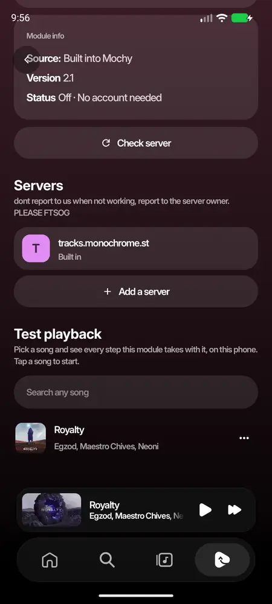
check server asks for your manifest again and says whether it answered.
test the module, at the bottom of its page: search any song (or take the one playing) and tap it. mochy runs everything your module adds with that song, right on the phone, step by step:
lyrics
→
song info
→
find the song
→
stream
→
license
→
decode 2 smuted
lyrics show how many lines came back, timed or plain, and the first one. song info shows the facts. the ••• beside a song plays it instead.
after turning it on, play anything: a toast says where each song came from, about song shows your facts, and the lyrics menu shows your provider.
Looks, players, bars and pages
turn the look on and hold the player: your style is first in the picker.
a shader that didn't compile is explained on your module's page under module info (bars and players) or right under the box (page shaders), with the compiler's own words.
change a setting on the page or in the customise sheet and the player follows straight away, so you can try each when and each state.
for states and events, play and pause, like and unlike, skip songs and watch each one switch.
while you build, add the zip again after every change. same id, so it updates in place.
SourceModules prints, for every song, which provider was asked, what it answered and why it was passed over. ActiveSkin says why a font, glass or player shader didn't load.
Rules & help
please read this one
Rules
https for every link: manifest, server, streams and pictures.
answer fast. mochy waits 12 s to connect and 20 s for an answer, then moves on. a slow module makes every song wait.
answer with json in the shapes on these pages, with Content-Type: application/json. return an error status (404, 503…) when something's wrong, never a web page with 200.
keep ids stable. an id from search must work in /stream/{id}, your manifest's id never changes, and neither do your settings' keys.
be honest in search results, lyrics and song info: real titles, every artist, real durations, real credits. a wrong duration makes mochy pick the wrong recording or none.
no encrypted streams. they're skipped anyway.
bump version whenever you change your module. it's what the update button shows.
never put secrets in a manifest you share. if your link carries a personal key, that link is a password. a text setting is the place for a key: it stays on the phone it was typed on.
don't pretend to be someone else. no other service's name or logo as your icon or banner.
buttons, menu rows and chevron items open what they say.
keep shaders and blur light. they run every frame, on slow phones too.
Something's off
you see
why, and what to do
"That's a website, not a module"
you pasted a website. use the module's link or its manifest.json. a monochrome site goes on monochrome's page under servers
"That link answered, but it isn't a module"
the manifest has no id and no name, isn't valid json, or adds nothing
"That GitHub project hasn't published a release"
publish a release (not a draft or pre-release) with the zip attached
"The newest release has no module in it"
the zip's name needs mochyymodule in it and has to end in .zip
"That file isn't a module"
no manifest.json at the zip's root or one folder in, or it isn't a zip
"…its .zip doesn't say where from"
the zip lists search, stream, lyrics or metadata but has no url
"…signed with the same key as your Mochy"
the zip's code was built with another key, like a debug zip on a release mochy
"This module's code didn't start"
built for another api version, or its module.apk has no entry meta-data. adb logcat -s CodeModules says which
no update button after a release
mochy checks each module a few times a day, tap check for updates on its page. the module must have been added from that github project or link (not a file), and the release's zip must say mochyymodule
"Couldn't update …"
the same reasons as adding it, the message says which. if your new manifest has another id, it's a different module: keep the id
my icon or banner doesn't show
paths are relative to manifest.json and case sensitive. png/jpg/webp/gif under 8 MB
my settings don't show
settings must be a list of objects, each with a key. quality and atmos show as mochy's own choices instead
a setting doesn't change the look
the module has to be on and the option's look must use look keys. several looks can stay on at once — if another look higher in your list sets the same key, that one wins (drag yours above it or turn the other off)
my player doesn't show up
your look has to be on, and the player needs at least one block mochy knows. then hold the player: yours is first in the picker
a block is missing from my player
its type is misspelled, its when says no right now, it's more than four groups deep, or a required field (an image's image, a button's action, a path's d) is missing
my path draws nothing
d may only hold path commands and numbers (no <path> tag around it), and the viewBox has to be the one it was drawn in
my glass box is just a tint
it blurs your player's background, so with the tones background there's nothing behind it. live blur runs natively on android 12+ and via gpu fallback on android 10–11 (android versions & gpu fallback), and the preview in the style picker never blurs
an animation doesn't move
loops only move while the song plays and the player is open (or add "run": "always"). check the keyframes name matches, and that the clock you picked has something in it (bass is 0 while paused)
a state never switches
check the condition: @paused with the @, a setting's key spelled like in settings, and key=value without spaces around the value you expect
blur doesn't show
per-block blur and floating-window blur need android 12+. frosted panels and bar glass work on android 10+, and background image blur works everywhere — full table on android versions & gpu fallback
my shader shows the fallback
it needs a zip. standalone shaders run natively on android 13+ and via opengl es 3.0 on android 7–12 (custom lyrics shaders need android 13). check your module's page under module info for the compiler error, and follow the portable agsl checklist
my glass doesn't show
module on? an option (or a look higher in your list) may have set bottomBar back to FROSTED. live glass shaders need android 10+, blur switched on, and a zip (android 7–9 uses your optional glass.fallback or mochy's frost). check module info if the shader failed
openSheet does nothing
openSheet pops a sheet defined in top-level "sheets" over a player screen (not from standalone pages — use sheetPage on pages instead), and its id must match exactly (sheets, lyrics & queue pages)
floating lyrics skin or toggle doesn't appear
floating lyrics needs android's display over other apps overlay permission turned on in system settings
my route or appSetting is ignored
only allowlisted safe routes (every caller) and safe keys (custom settings pages) are permitted. login, backup, proxy, cipher and account keys are blocked by the sandbox
my page isn't in settings
it needs "inSettings": true, the module on, a valid id and at least one block
my menu row doesn't show
module on, a title, and at least one valid caller (link, page, sheetPage, route, sheet, openSheet, search, action, toggleSetting, or setSetting). rows only show while a song is loaded
my audio script isn't listed or pauses itself
check the .eel path is inside the zip and under 512 KB, its id uses only letters/numbers/._-, and tap edit script → check on the card. if a script runs too slowly for real time, mochy pauses it with a resume button
my font isn't used
zip only, .ttf or .otf, and regular must point at the file. a broken font is skipped
the visualizer stays flat
nothing's playing, or the audio is going straight to a receiver mochy can't read from
the test finds the song but it never plays from your module
check the stream with curl -I: audio (200 or 206), not a web page. check the codec and sample rate are ones the phone can decode
songs come from youtube instead
your module is below youtube in the provider order, it's off, or it was skipped for 10 minutes after not answering
my lyrics never show
module on and lyrics in resources? another source may have better ones (word synced beats line synced): pick yours in the lyrics menu → lyrics provider to check
about song doesn't show my facts
the module has to be on and list metadata, and answer within 12 seconds
"… didn't answer" under the name
your server didn't answer. tried again after 10 minutes, or right away with check server
modules are made by other people. reports about a 3rd party module will be ignored, ask whoever made it!
Security & sandbox
how mochy lets modules rebuild the whole interface without risking your accounts, files or phone
giving modules full UI and audio power only works because every surface is declarative, bounded, and isolated. here is what mochy enforces automatically on every look, page, shader, script and caller:
boundary
what mochy enforces
No untrusted native code
look modules, pages, menus, floating skins, sheets and backgrounds are pure JSON + assets + validated AGSL shaders. executable code modules and native .so audio libraries require mochy's own signing key.
Shader GPU-DoS guard
before Skia (or the GLES 3.0 transpiler) compiles any .agsl/.sksl file, mochy blocks while/do loops, unbounded for loops, loop bounds above 128, more than 6 loops, more than 32 .eval() samples, #include/#pragma/#extension/#version directives, illegal control characters, and files over 64 KB.
LiveProg audio sandbox
.eel mixer scripts (up to 512 KB, max 32 processors) cannot access files, folders, threads or sleep. non-finite output (NaN/Inf) is silenced automatically, and scripts too slow for real time are paused with a resume button.
Strict route allowlist
route callers, settingsLink blocks and bar tabs only permit safe browsing, library, media and safe settings routes. youtube_login, youtube_sync, backup, proxy_settings, cipher_settings, discord, scrobble_service, account_import, experimental_settings, playback_diagnostics, path traversal (..), query strings and foreign URI schemes are rejected.
Strict app-setting allowlist
appSetting blocks and toggleSetting/setSetting callers can only touch allowlisted UI, blur, lyrics, canvas, playback, behaviour and audio-lab preferences (full list). cookies, tokens, passwords, proxy URLs, backup credentials, API keys, screenshot protection and developer flags are never exposed.
Un-escapable exit paths
taking over mochy_settings always pins a native un-hideable safety bar at the top with 1-tap Modules and Original buttons. settingsCategories always keeps Modules present, bar always keeps the Settings tab, and custom bubble menus always keep Other menu and Edit player reachable.
Protected sensitive screens
modules, login, sync, backup, proxy, cipher, Discord, scrobble and experimental screens can never be taken over and never render app-wide module backgrounds.
Caller rate-limit & sheet cap
module callers are rate-limited (max 6 actions/second per module), modal sheetPage nesting is capped at 2 sheets deep, and every expanded link URL is checked for SSRF (localhost/LAN/metadata IPs) and secret exfiltration before opening.
Zip-bomb & size limits
zip extraction blocks path traversal (..), symlinks, archives over 200 files / 24 MB per file / 48 MB total, and decompression ratios over 100× past 1 MB.
Legibility clamps
bottom sheet surfaces enforce at least 86% opacity, floating lyrics bubbles clamp opacity/scale/corner radii, and every numeric size, blur radius and timeout is bounded.
Roadmap
what's done, what's next
this is the live board i plan mochy on, so it's always up to date. drag to move around, pinch or scroll to zoom.
live surface blocks (games, emulators, custom engines)
ui/player/styles/SkinSurface.kt, SurfaceSession.kt, and SurfaceModule in MochyModule.kt
a player's animations: keyframes, easings, clocks, states, events
the model in modules/skin/SkinAnimation.kt, read by SkinAnimationParser.kt, played by ui/player/styles/SkinAnimator.kt (the live flags, the event hub and each block's one layer)
a player's boxes and paths
ui/player/styles/SkinPanels.kt
pages, media blocks, custom Settings pages & app backgrounds
every module player and sub-style there is to pick, the pick, the nav bar and the takeovers that are on
modules/skin/ActiveSkin.kt (ModuleStyle, ActiveBar, Takeover), the picker's columns in ui/player/BottomSheetPlayer.kt and studio/PlayerSelector.kt
the flagship's editor on a module player
the parts in SkinEditPart (ModuleSkin.kt); ui/player/styles/ModuleEditor.kt (its state, the tiles and the hold); ui/player/studio/ModuleEditOverlay.kt (the top bar and the part's panel), opened from BottomSheetPlayer's edit
a module player's bottom bar
ui/player/styles/SkinBottomBar.kt, the volume style reusing ui/player/PlayerVolumeBar.kt
a look's mini player
ui/player/styles/ModuleMiniPlayer.kt, drawn in ui/player/MorphingCover.kt in place of mochy's words and buttons; its clocks run off LocalStyleShowing
a nav bar of a look's own
the model in modules/skin/SkinBar.kt, read by SkinBarParser.kt, drawn by ui/component/ModuleNavBar.kt (and ModuleNavBarMotion.kt) in AppNavigationBar's place
custom lyrics, flow lyrics and player info
modules/skin/SkinLyricStyle.kt, SkinLyricsParser.kt; ui/player/styles/SkinCustomLyrics.kt, SkinFlowLyrics.kt and SkinPlayerInfo.kt (the lyric clock and the placeholders)
scaling and sliders
modules/skin/SkinSize.kt, ScaledContent in ModulePlayerStyle.kt; a slider's range in web/ManifestSettings.kt (FieldRange), drawn by ModuleOptions.kt
pages taking mochy's over
every route goes through the graph's composable in ui/screens/NavigationBuilder.kt into ui/screens/settings/modules/ModuleTakeover.kt; what was taken over in PageSubjects.kt, its blocks in ModulePageBlocks.kt
the customise sheet
app/…/ui/player/menu/SkinCustomiseSheet.kt
menu rows in the player
app/…/ui/player/menu/ModuleMenuRows.kt
a look's glass & Android 7–12 GPU fallback
ActiveSkin.kt (compiles off the main thread), ui/component/ModuleGlass.kt, FrostedGlass.kt, AgslTranspiler.kt, GlFallbackEngine.kt, GlFallbackSurfaces.kt, docs/notes/module-glass.md
data saver
app/…/utils/DataSaver.kt
a look's font across the app
LookFont in ui/theme/Type.kt
stacked looks: applying and giving settings back
app/…/modules/ModuleLooks.kt
the catalog
modules/catalog.json, read by ModuleCatalog.kt
the modules pages
app/…/ui/screens/settings/modules/
JS Modules
not in this repo: mochy-js-modules, next to the mochy folder
downloads
app/…/playback/DownloadUtil.kt
The contract and its version
:modules:api is plain kotlin on purpose: no android, no media3, no http library, so a module can be built as its own apk and loaded at runtime. it has a version, MODULE_API_VERSION (now 3). a module app built for another version is skipped with a log line, so it can't crash mochy.
change
bump?
add a new optional interface (like ModuleArt, ModuleFields, MetadataModule)
no
add a field with a default to a class only mochy creates
no
add a field with a default to the end of a class modules create, with @JvmOverloads so the old constructor stays
no
add a value to ModuleFeature
no, a module only lists the ones it adds
rename, remove or change the type of anything a module calls or implements
yes
add a method to an interface modules implement, even with a default body
yes, an older module app was built without it
change what a value means (units, ranges)
yes
after a bump every module app has to be rebuilt against the new api. built-in modules are rebuilt with mochy anyway.
What a module can implement
interface
what it gives mochy
SourceModule
resolve and diagnose for songs. track.videoId is the song's youtube id when it came from youtube (null for local files), so a source keyed by it can skip the search
LyricsModule
lyrics(track) as lrc or plain lines
MetadataModule
metadata(track), a TrackMetadata
LookModule
look, a LookSetting name to its value
ModuleArt
icon and banner: a link, or a file path (in host.folder for a code module)
ModuleFields
fields (Text, Select or Toggle) and onFields(values)
ServerListModule, ItemListModule
the lists on its page; ModuleItem can carry an icon link and working
SurfaceModule
renders live 32-bit ARGB frames into a player surface block (surfaceStart, surfaceSize, surfaceTick, surfaceCopyFrame, surfaceSetPaused, surfaceKey, surfaceTurn, surfaceLastError)
ModuleFeature also includes AudioProcessor for manifests that declare mixer effects in "audio" (LiveProg .eel or signed native .so).
settings for code modules: implement ModuleFields. mochy keeps each value (its default until changed) and calls onFields with every value right after attach, and again each time one changes. over the bridge, BridgedModule always implements ModuleFields, ModuleArt and MetadataModule; a zip packed before they existed simply has none.
Adding a look setting
add the key to LookSetting in MochyModule.kt, with a one-line comment saying its values.
add it to ModuleLooks.Settings with the preference key it writes and a parser that turns away anything out of range (enumName<…>, number(it, min..max) or bool).
a look can never reach anything that isn't in ModuleLooks.Settings. that's the safety line, so keep it to look settings: no accounts, no network, no playback.
Adding a player block, background, page block or action
add it to the model in ModuleSkin.kt (SkinBlock, SkinBackground, PageBlock, ButtonKind or ActionTarget).
read it in SkinPlayerParser.kt (player) or SkinParser.kt (pages, rows, glass). give every field a default and clamp every number, so a typo can't break the player.
draw it in ModulePlayerStyle.kt or the skin files next to it, ModulePageScreen.kt or ModuleMenuRows.kt. follow the smoothness rules: read anything that changes every frame (position, SkinPulse) inside drawBehind/graphicsLayer, never in composition; let anything that loops ride SkinPulse so it rests with the player, and wrap it in damageBoundary() when nothing draws outside it; compile shaders off the main thread in ActiveSkin; use the GlassKit helpers for live blur.
add a case to SkinParserTest.kt, ModuleSheetsParserTest.kt or ManifestSettingsTest.kt, and a row to the matching page of this wiki.
an older mochy skips a block it doesn't know, so adding one never breaks older layouts. renaming or removing one does, so don't.
Adding an animation property, clock, event or condition
a property (something keyframes and states can move): add it to PoseProp with its neutral value and whether it multiplies, read it in SkinAnimationParser.value with a range, add it to PoseSum.add and apply it in skinStyled.
a clock: add it to SkinClock, its name in SkinAnimationParser.timeline, and what it reads in SkinTimeline.at (draw time only, never in composition).
an event: add it to SkinEvent, its name in SkinAnimationParser.event, and the flow that fires it in rememberSkinEvents. it only collects for events the layout uses (SkinPlayer.events).
a built-in condition: add it to SkinFlag and to SkinContext.flagOn. keep what it reads in SkinLive as snapshot state, so only blocks naming it recompose.
the one rule here: everything that changes per frame is read inside the block's graphicsLayer. a state switch animates an Animatable weight, an event animates an elapsed time, and neither ever recomposes the block.
Updates
ModuleUpdates keeps, in the source_modules prefs, source_<id> (a github project with the tag and file stamp it was added at, or a link with a fingerprint of its manifest), update_<id> (the newer version waiting) and update_checked_<id>. install writes the source from LinkCheck.Ready.source (null for a file from the phone, which clears it) and swaps a look that's on to the new values. the modules view model checks on open, each source at most every 6 hours, so github's 60 an hour without a key is never close.
Changing what a link or zip module can do
new manifest fields go in WebModuleManifest, always with a default, so every manifest out there keeps working.
new calls or answer fields go in WebModule. read new fields as optional and keep reading the old ones.
update this wiki (docs/wiki/index.html) in the same change. it's the one module guide now, modules/README.md only points here.
Adding a built-in module
make a gradle module modules/<name> that depends only on :modules:api (plus kotlinx-serialization-json if needed). add it to settings.gradle.kts and as a dependency of :app.
implement SourceModule, LyricsModule, MetadataModule and/or LookModule. all http through host.http(…), small state in host.storage, bigger files in host.folder.
add it to the built-in list in ModuleRegistry.load().
give it a logo in ModuleParts.logoFor and providerLogo in AudioQualityScreen.kt, or implement ModuleArt.
write tests with a fake host like MonochromeModuleTest.kt, run with ./gradlew :modules:<name>:test.
Zip modules with their own code
these live outside the repo, so mochy never compiles them. mochy-js-modules is the one to copy:
its mochy-api and mochy-bridge projects compile mochy's modules/api and modules/bridge straight from a mochy checkout (mochyDir in its gradle.properties), so the zip always matches.
module/ is the module, written like a built-in one, with a no-argument constructor.
zip/ is an android app build depending on :module and :mochy-bridge, with <meta-data android:name="com.mochyy.mochymusic.module.entry"> naming the module class, and a manifest.json with "code": "module.apk".
./gradlew :zip:moduleZipDebug makes the zip for a debug mochy, :zip:moduleZipRelease (with the release key's environment set) for a release one. it lands in zip/build/outputs/module/. name the release assets …-debug.mochyymodule.zip and ….mochyymodule.zip and github links pick the right one.
keep r8 off in the packing project: mochy makes ModuleSide and your module class by name. only com.mochyy.mochymusic.module.bridge.shared crosses between the two class loaders. it's kept by name in mochy's r8 rules, and changing it means bumping MODULE_API_VERSION.
Module apps
an apk whose code runs inside mochy. it needs a <service> answering com.mochyy.mochymusic.SOURCE_MODULE, <meta-data android:name="com.mochyy.mochymusic.module.entry" android:value="your.module.EntryClass" /> on it, an entry class with a no-argument constructor implementing MochyModule, and to be signed with mochy's own key and built for the same api version. build against :modules:api as compileOnly. a module app replaces the built-in module with the same id.